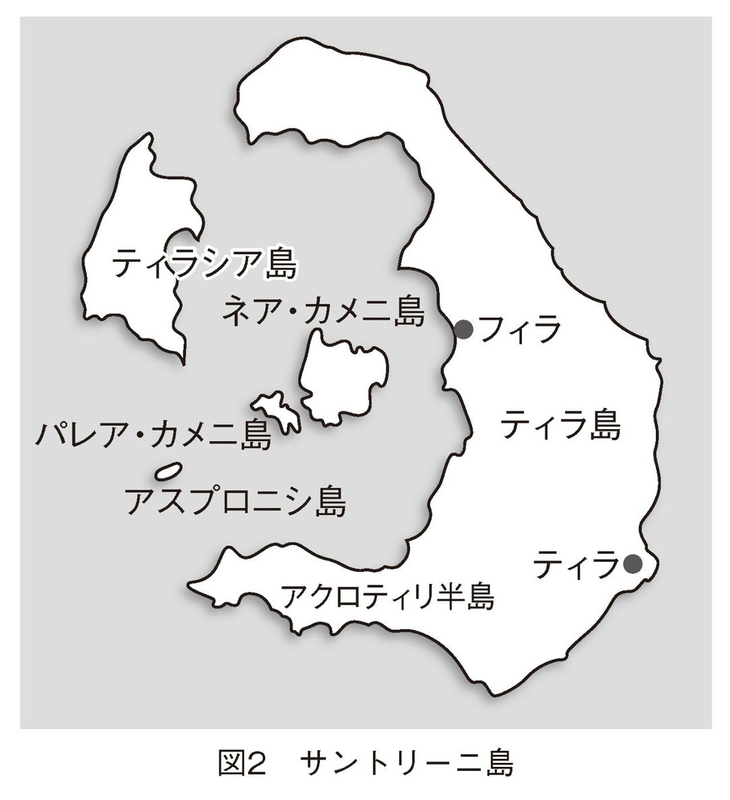

| アトランティス・ミステリー プラトンは何を伝えたかったのか (PHP新書) | |
| 庄子 大亮 | |
| 株式会社ＰＨＰ研究所 (2009) | |

アトランティス・ミステリー
プラトンは何を伝えたかったのか
庄子大亮
まえがき
「アトランティス伝説」は、人々の想像力を刺激してきた、史上最も有名な伝説といっていいでしょう。現代でも様々な形で受け継がれている「アトランティス」とは、そもそも、紀元前四世紀の古代ギリシアに生きた哲学者、プラトンの著作に登場する伝説の島のことです。現代から一万二千年ほど前、大西洋上にアトランティスという島が存在し、繁栄していたのですが、次第に堕落してしまい、神罰によって一昼夜にして海中に没してしまったと伝えられているのです。
いうまでもありませんが、一万二千年前、定説では文明はまだ存在していません。たとえばエジプトで統一王国（第一王朝）が成立するのが五千年前頃のことで、これでも相当古い年代ですが、さらに遡って一万二千年前といえば、人類はまだ石器時代の段階にあったはずなのです。アトランティスは、そうした太古にすでに海上を支配する国家を築き、豊かな物資に恵まれながら、高度な建築技術のもとに都市を建造し、繁栄していたとプラトンは伝えています。
アトランティスは、はたして実在したのでしょうか。アトランティスについて論じた書は数えきれないほどありますが、本書では西洋古典学の成果をふまえながら、このアトランティスの謎を根本から再考し、謎解きを試みていきます。
アトランティスは、それ自体を扱った本などのほかにも、様々な小説や漫画、アニメ、映画に「失われた国」として登場したり、スペースシャトルの名前にまでなったりしています。そのため、アトランティスという言葉に聞き覚えがある方が多いようです。たとえば、私より少し下の世代の方からは、一九九〇～九一年にかけてＮＨＫで放映されていたアニメ『ふしぎの海のナディア』に登場した、失われた国アトランティスが印象に残っているという話をよく聞きます。またアニメといえば、二〇〇一年にディズニーの『アトランティス──失われた帝国』という映画が公開されました。こちらをご覧になったことがある方もいらっしゃるでしょう。ちなみにこの映画、キャラクター設定などで『ふしぎの海のナディア』との類似が指摘され、騒動になったのですが。
最近ではこんな「事件」もありました。世界中の衛星写真を閲覧することができるGoogleEarthが、海底の地形も再現できるようになったところ、大西洋海底に人工物の痕跡のような線を見つけた人がいて、「アトランティス発見か？」とインターネット上で話題になったのです。ところがGoogleが、この線は船の航跡に過ぎない、と公式にコメントを発表したのでした（二〇〇九年二月）。これはアトランティスに対する世界中の人々の関心の高さがよくわかる出来事です。
一九九〇年代には、いわゆる「超古代文明」の探究がブームとなりました。世界の諸文明の源として超古代文明の存在を主張した一連の著作が人気を博し、マスコミでも盛んに取り上げられたのです。そういった著作での主役も、アトランティスでした。近年でも『ダ・ヴィンチ・コード』に代表されるように、様々な歴史上の「謎」への興味が広く見られますが、アトランティス伝説はそういった「謎」の代表格でもあるのです。
アトランティスへの関心の焦点となってきたのは、「この伝説には何か歴史的事実が隠されているのではないか」という問いです。二〇〇五年にギリシアのミロス島で、アトランティス研究の国際学会が開かれましたが、そこでも議論の中心となったのは「アトランティスはどこにあったのか」という問題でした（ちなみにこの国際学会、第二回は二〇〇八年にアテネでおこなわれ、今後も開催されるとのことで、次回は二〇一〇年の予定です）。なにしろアトランティスについて語ったのは、教科書にも登場する有名な哲学者のプラトンです。それにプラトンはこの伝説について、「真実の話」であると強調しているのです。
本書では、アトランティスの実在をめぐる諸説も紹介しながら、アトランティス伝説の意味は何か、という謎解きを試みたいと思います。本書は、「アトランティスは○○に実在した！」というような主張を前面に押し出すわけではありません。また、「超古代文明」への関心を、学問の立場から見下げて批判するのでもありません。アトランティスへの関心の背景も視野に入れながら、「虚構」なのか「真実」なのか、この伝説の意味を根本から考えてみよう、というものです。アトランティスはどこにあったのかを論じた本は数多くありますが、こうした視点に立ったものは、いままで国内ではほとんどありませんでした。
私は西洋史の研究者ですが、そもそもそうした道に進んだのは、アトランティスを始めとした、様々な神話・伝説に興味があったからでした。どうして人間はそうした物語を語ってきたのか、探究してみたかったのです。そして、学んできて知ったのは、神話・伝説は決して非合理ではないということです。どんな地域、時代においても、古の人々が語ってきた神話・伝説には、各々の社会、世界観に根ざした意味があります。また、後世、様々な形で神話・伝説に投影された人々の思いにも、歴史的背景があるということがわかったのです。アトランティス伝説を知るということは、実は現代にもあふれている神話・伝説的な物語への理解力を養うという意味で、現代社会における教養ともなるでしょう。
私たちは、科学的・合理的世界観の立場から、古代人の神話・伝説を見下げているところがありますが、実は現代の我々の方が、小説や漫画、映画、そして偏見といった多くの「作り話」、いわば「現代の神話・伝説」に囲まれていることに気づきません。そうした自らの世界観は、自分たちの時代だけ見ていては意外にわからないものなのです。
このように考えていた私は、大学の講義でもそうしたテーマを扱っているうちに、学生さんたちの反応にも刺激を受けて、もっと広く人々に伝えられるような形にしてみたいと思うようになりました。ですから、本書は堅苦しい歴史学の本ではありません。いわゆる「実証」を超えて考えてみた部分もあります（ただし妄想ではありません）。そうした部分は、研究者におしかりを受けるかもしれませんが、味気ない事項の羅列よりもずっと意味があるのではないか、とも思っています。
それでは、アトランティス伝説は「虚構」なのか、「真実」なのか、探究していきましょう。
アトランティス・ミステリー──プラトンは何を伝えたかったのか 目次
 大西洋東西のピラミッド
大西洋東西のピラミッド 海嶺
海嶺 文明伝播の伝説
文明伝播の伝説 「文明伝播」という落とし穴
「文明伝播」という落とし穴
章扉写真──アトランティスの候補地のひとつ、サントリーニ島の風景（撮影：著者）
プラトンの対話篇に登場
まずは、そもそもアトランティス伝説とはどのようなものなのか、確認しておきましょう。
まえがきでも述べたように、アトランティスについて伝えたのは、古代ギリシアのアテナイ（アテネ）に生きた哲学者のプラトン（前四二七－前三四七）です。プラトンは、「対話篇」と呼ばれる著作群を残しています。対話篇というのは、プラトンの師ソクラテス（前四六九頃－前三九九）が当時の著名な知識人と繰り広げる架空の対話によって、ソクラテスおよびプラトン自身の思想を展開させたものです。語り手としてソクラテスが登場するように、多くの場合、登場人物は実在の人物です。『ソクラテスの弁明』など初期のものはソクラテスの思想をそのまま伝える性格が強いのですが、後期の作品になるほどプラトンの思想の方が色濃く出ていると考えられています。アトランティスについて語られているのは、プラトン晩年（前三五〇年代）の対話篇、『ティマイオス』と『クリティアス』においてです。
これらの対話篇は、理想国家のあり方を論じた『国家』という対話篇の続編と位置づけられています。プラトンは哲学者として、国家はいかにあるべきか、という問題を考えていたのです。
まず『ティマイオス』冒頭で、アトランティス伝説について簡単に言及されています。『国家』での話から、太古に存在したという国のことを思い出した、と登場人物の一人クリティアスがいい出します。次いで、ティマイオスという人物が、世界の創造、人間の身体の成り立ちなどについて語っていきます。国家のあり方を考えるために、世界の始まりからの歴史がふり返られるのです。このティマイオスという人物が主な語り手なので、タイトルが『ティマイオス』であるわけです。ティマイオスは、イタリア半島南東岸のロクリスの人とされ、優れた政治家で、天文学にも通じた人物として登場しています。
アトランティスについては、続く『クリティアス』において詳しい説明がなされます。『ティマイオス』冒頭でアトランティスの話に言及し、ここでは主な語り手をつとめる「クリティアス」とは、プラトンの母方の曾祖父であるクリティアスのことだと考えられています。『クリティアス』はその叙述のほとんどがアトランティスの描写に費やされており、この対話篇は「アトランティス物語」とも呼ばれているのですが、実はその物語は突如中断され、未完のままとなっています。
この対話の場には、ティマイオス、クリティアスに加え、シチリア島のシュラクサイ（現在のシラクサ）の政治家であるヘルモクラテスも同席していることから、ヘルモクラテスの名を冠した対話篇も用意されていたことが明らかです。しかし、なぜか『クリティアス』において中断されているのです。紀元一世紀の著作家プルタルコスは、プラトンが晩年になって『クリティアス』を書き始めたため、未完成のまま亡くなったと伝えているのですが、真相はわかりません。
もし完成していたら、アトランティスの謎は明らかになっていたのかもしれませんが、逆にいえば未完であるがゆえに、人々の想像力を刺激してきたという面もあるでしょう。二〇〇五年、アトランティス研究の国際学会がギリシアのミロス島で開かれたという話をしましたが、そのミロス島で発見されたのが、有名な「ミロのヴィーナス」像です。この古代の女神像、すぐにはイメージがわかないかもしれませんが、破損して両腕がない像、というと、「ああ、あれか」と姿が思い浮かぶ人も多いのではないでしょうか。両腕がないからこそ、いったいどんなポーズを取っていたのかと、後世の人々の想像力を刺激し、偉大な美術作品として受け継がれてきたともいわれています。そんな話と似ているかもしれません。
伝説の情報源
それでは、伝説の内容を見ていきましょう。クリティアスは、このアトランティスの話を「何とも不思議な話ではあるが、しかしそれでも全面的に真実の話」（Tim. 20D-E）と強調して語っていきます（以下、Tim.は『ティマイオス』、Criti.は『クリティアス』、数字とアルファベットは引用箇所を示します）。その情報源は、アテナイのソロンに遡るといいます。ソロンは、前五九四年にアテナイで民主的改革をおこなった、世界史の教科書には必ず載っている人物で、古代ギリシアの「七賢人」の一人でもあります。このソロンがエジプトへ旅した際、ナイル川河口の西にあった都市サイスの神官から、アトランティスの物語を聞いたというのです（Tim. 21E-22A）。ソロンのエジプト訪問については、前五世紀の歴史家ヘロドトスも伝えており、その年代を前五九三年頃としています。
ソロンはこの神官から聞いた話をもとに、叙事詩を作ろうとしていたのだとクリティアスはいいます。そしてクリティアスの曾祖父ドロピデスがソロンからその物語を聞き、クリティアスの祖父に伝え、クリティアスは幼い頃に何度もその話を聞いたのだと述べるのです（Tim. 20E）。クリティアスはあとで、ソロンが書きとめた記録が手元に残されているのだともいっています（Criti. 113B）。
エジプトの神官によると、アトランティスが存在したのは、ソロンの時代から九千年以上前です。先にふれたように、ソロンがエジプトを訪れたのは前五九三年頃と伝える記録がありました。このソロンの時代から九千年前ですから、いまから一万二千年ほど前（もう少し正確にいえば一万一千六百年ほど前）ということになります。人類史の区分ではまだ石器時代のその頃、国家の存在は確認されていません。
アトランティスの位置と規模
次に、アトランティスの位置と規模について、実際に対話篇を引用しつつ見ていきましょう（本書でのプラトンの著作の訳文引用は、岩波書店『プラトン全集』によります。訳文中の［ ］は引用者による補足、〔 〕は訳者による補足です）。なお、エジプトの神官がソロンに向けて語っているという設定ですから、ここでの「あなた方」とはギリシア人を指します。
「......あの大洋［大西洋］には──あなた方の話によると、あなた方のほうでは『ヘラクレスの柱』とこれを呼んでいるらしいが──その入口（ジブラルタル海峡）の前方に、一つの島があったのだ。そして、この島はリビュアとアジアを合わせたよりもなお大きなものであったが、そこからその他の島々へと当時の航海者は渡ることができたのであり、またその島々から、あの正真正銘の大洋をめぐっている、対岸の大陸全土へと渡ることもできたのである」（Tim. 24E-25A）
地中海と大西洋の境に位置するジブラルタル海峡の両岸には山があって、それはギリシア神話の英雄ヘラクレスが作ったという伝説があったので、ジブラルタル海峡は「ヘラクレスの柱」と呼ばれていました。その向こう側（前方）に存在したというので、アトランティスは大西洋にあったということになるわけです。ちなみにスペインの国旗（紋章部分）には、その「ヘラクレスの柱」が描かれています。
そしてアトランティス島は、リビュアとアジアを合わせたより大きい島であったといわれています。「リビュア」とは当時の北アフリカ一帯、「アジア」は小アジアすなわち現在のトルコあたりを指しています。また古代では、大西洋の周りを取り囲んで陸地が存在すると思われていたようです。それで、アトランティスの向こう側に「対岸の大陸」があるといわれているわけです。それはアメリカ大陸のことをいっているのではないかとして、「アトランティスは大西洋に実在し、アメリカ大陸の存在も知られていた」という主張の根拠ともされるわけですが、その話はあとで詳しくふれることにします。
アトランティスの成り立ち
次に、アトランティスの成り立ちを見ておきましょう。始原のとき、神々は領土の分配をおこないました。そのとき、のちのアトランティス島を領有することになったのが、ポセイドンでした。ポセイドンは、三叉の矛を持った姿で描かれる海の神です。ポセイドンは島に暮らしていた人間の娘クレイトを妻として、子をもうけます。その子孫がアトランティスの支配者となったのです。
「ポセイドンはまた五組のふたごの男の子を生み、育てられた。そしてアトランティス島全体を一〇の地域に分けたまい、最年長のふたごのうち、さきに生まれた子に、母の住まいと、その周辺のいちばん広いもっとも地味の肥えた地域を分け前として与えて、かれを他の子どもたちの王となしたまい、他の子どもたちには、それぞれに多くの人間どもを支配する権限と広い地域からなる領土を与えて、その領主とした。なお、かれは子どもたち全員に名前をおつけになったが、そのさい、初代の王となった最年長の子におつけになった名前が『アトラス』だったので、この名前にあやかって、島全体も、その周辺の海も、アトランティコス......［アトラスの、という意味］と呼ばれるようになったのである」（Criti. 113E-114B）
このように、「アトランティス」という名称は初代の王アトラスに由来しています。そして、この兄弟たちの子孫が治めるアトランティス島は、海上を支配する強国となっていきます。
「......これらの兄弟とその子孫たちは、みな、何代にもわたってこの島に住みつき、大海原に浮かぶたくさんの島々を支配するとともに、......エジプトやテュレニア［イタリア］におよぶ地中海世界の人々をもその支配下に収めていたのである」（Criti. 114C）
一〇人の王たちの権力と国事運営については、以下のように伝えられています。アトランティスは専制君主国家だったのです。
「国家統治の名誉ある職に関することがらは、建国当初より、つぎのように定められていた。一〇人の王は、それぞれ自分の領内や町では住民の上に絶対権力をふるい、ほとんどの法を支配し、意のままに人を罰し処刑していた。とはいえかれら相互の支配関係や交わりについてはポセイドンの〈戒め〉にしたがっていたのであって、これは一つの掟としてかれらに伝えられ、碑文として初代の王たちの手でオレイカルコスの柱に刻まれたのであるが、この柱は島の中央のポセイドンの社に安置されていた。ここでかれらは、五年毎に、ある時には六年毎に会合をもち、......この会合で国事公共の問題を相談したり、なにか罪を犯した者がいるかどうかを調べて、裁きを下していたのである」（Criti. 119C-D）
ところで、ここに登場する「オレイカルコス」は、「オリハルコン」に変化して、謎の金属として現代のフィクション作品や、ゲームなどによく出てきます。たとえば「ドラゴンクエスト」シリーズには、「オリハルコン」の武器が登場していました。この「オレイカルコス」は、プラトンよりも前の文学作品でも言及があるのですが、いったい何を指すのかは不明です。ただ、文字通りの意味は「山の銅」で、古典学者は銅と亜鉛の合金である真鍮（黄銅）のことをいっているのではないかと推測しています。
さて、いま引用した箇所の続きでは、王たちが裁きを下す前におこなう儀式について説明されています。それは次のようなものです。ポセイドンの社には牡牛が放されており、王たちは牡牛を追ってそのうちの一頭を捕まえて、掟の刻まれている柱のそばに連れていき、その柱の先端で牡牛の喉を切り、流れ落ちる血で掟の文字を染めます。その柱には掟のほかに、掟に従わない者がいれば、その者に恐ろしい呪いがふりかかるように、という誓願が刻まれていました。それから王たちは牡牛を生贄として、以前に何か罪を犯した者がいれば裁き懲らしめられるように祈るとともに、掟を破ることはないと誓ったというのです（Criti. 119D-120B）。
巨人神アトラス
ところで、アトランティスの名称の由来となった「アトラス」という名前なのですが、聞き覚えのある方もいらっしゃるでしょう。ギリシア神話ではアトラスは、オリュンポスの神々との争いに敗れ、罰として西方で天空を支える巨人神の名です。大西洋のことを英語で「アトランティック・オーシャン（Atlantic Ocean）」といいますが、これははるか西方でアトラスが天空を支えているという神話に基づくと考えられています。北アフリカのアトラス山脈も、この巨人神アトラスに由来しています。ギリシアから見れば遠く西方に存在し、高くそびえるこの山脈は、まるで天を支えるアトラスのように思えたことでしょう。
失われた島「アトランティス」への言及は、プラトンよりも前には認められないのですが、この西方の「アトラス」はギリシア人がそれ以前から語り継いできた多くのギリシア神話のひとつです。プラトンはこの神話を流用して、西方にあったというアトラスの島＝アトランティスという名を考え出した可能性が指摘されています。このようにプラトンは様々な要素を借用して、物語を創作したのだとする見方に対して、プラトンは「真実の話」と強調して非常に詳しくアトランティスを描写しているのだから、事実を反映しているに違いない、という意見があるのです。では今度は、そういった詳しい描写を見ていきましょう。
アトランティスの首都
ポセイドンは、妻のクレイトとの住居の周りの大地を砕き取り、環状水路（ドーナツ型の水路）をめぐらせたといいます。そして、その水路に囲まれた島に王宮が置かれ、アトランティスの首都の中心部となったのです（図１参照）。
王宮が存在した中央島は、直径五スタディオン（約八八八メートル）でした。ドーナツ型の水路は三重にめぐらされ、中央島を囲んでいる水路は幅一スタディオン（約一七七・六メートル）、その次の水路が幅二スタディオン、一番外側が幅三スタディオンだったとされます。互いの水路は船で連結水路を通って移動可能でしたし、一番外側の水路は外海につながっていました。その外海への水路は、幅三プレトロン（約八八・八メートル）、深さ一〇〇プース（約二九・六メートル）、長さ五〇スタディオン（約八八八〇メートル）でした。プラトンは、「外界へ向かう水路や町一番の港は、世界各地からやって来た船舶や商人で満ち溢れ、昼も夜もかれらの話声や多種多様の騒音、雑音で、たいへんな賑いを見せていた」と伝えています（Criti. 117E）。
このように首都は外海と結ばれていたわけですが、首都の北方には、大きな平野が広がっていて、その大きさは、東西三〇〇〇スタディオン（約五三二・八キロメートル）、南北二〇〇〇スタディオン（約三五五・二キロメートル）でした。しかもその平野には、幅一〇〇プース（約二九・六メートル）の運河が碁盤の目状に走っていました。一番外周の運河、つまり平野を取り囲む運河はずっと大きなもので、その幅は一スタディオン（約一七七・六メートル）もあったといいます。
以上のような水路や運河は、あまりにも規模が大きいのですが、まるで実際に目にしたことがあるかのように、具体的な数字が挙げられている点が特徴といえるでしょう。
アトランティスの繁栄
首都北方の平野は美しい山々によって囲まれていて、山々にも人々が暮らす村がたくさんあったと伝えられます。また、豊かな川や湖に加えて、家畜や野生動物に豊富な餌を提供する草原も広がっていました。動物といえば、アトランティスには「象のような」生き物もたくさん生息していたとされます。
森林も豊かで、どんな需要にも応じるいろいろな種類と大きさの木材もありました。また地下資源も豊富で、「金につぐひじょうに貴重な金属」であるオレイカルコスが島のいたるところに分布していました。
アトランティスでは地上に産する香料は何でも取れたし、葡萄、主食の穀物、油を作るための木の実なども豊富に取れたといいます。アトランティスは、さんさんと照り輝く太陽のもとにあって、豊かな実りがもたらされていたのです（Criti. 114E-115B）。
そして歴代の王たちは、「かつていかなる王の権力をもってしても集められたことがないほどの、またこれからもなかなか集められそうもないほどの莫大な富を所有し、およそ都市その他の地域で必要とされるあらゆる施設はこれをことごとくそなえつけていた」のです。というのは、「かれらの支配権のゆえに海外諸国からかれらのもとに多量の物資が寄せられた」うえに（Criti. 114D-E）、島自体が豊かであったので、生活に必要なもののほとんどが島のなかでも手に入ったからです。
アトランティスの軍事力も強大でした。詳しい説明がなされるのは首都だけなのですが、この首都だけで、一二万の重装歩兵、同数の弓兵や投石兵、三六万の軽装歩兵、戦車一万台、戦艦一二〇〇隻分の要員を十分維持することが可能であったというのです。
アトランティスの滅亡
このように栄華をきわめたアトランティスは、ついには地中海全体の征服を企てるのですが、アテナイによって撃退されたと伝えられています（Tim. 25B-C）。もちろん、そんな昔にアテナイが存在したというのも伝説的な話です。そのあとアトランティスは、こうした支配欲の果てに「堕落」に対する罰を受けることになるのです。
アトランティスの住民たちが次第に堕落していく様子を、最高神ゼウスは見ていました。かつてのアトランティスは、ポセイドンの子孫が治める国として神性を備えており、「徳以外のものはすべて軽視」して、「自分たちの所有物〔すなわち諸財〕にこだわるようなことはせず」「富ゆえの贅沢に酔って自制心を失」うことはなかったのですが、地中海全体の征服を企てたように、見苦しいふるまいをするようになったのです。しかしアトランティス人たちにとっては、この時代こそ、最もすばらしい、祝福に満ちた時代に思われたのでした。それは、彼らが欲望を満足させ、その力をほしいままにしていたからだとプラトンは述べています（Criti. 120E-121B）。
こうした堕落、傲慢に対して、ゼウスが罰を与えようとするところで『クリティアス』は中断されているのですが、アトランティスの最期については『ティマイオス』の方で先に述べられています。エジプトの神官は次のようにソロンに語っていました。
「しかし後に、異常な大地震と大洪水が度重なって起こった時、過酷な日がやって来て、その一昼夜の間に、あなた方［アテナイ人］の国の戦士はすべて、一挙にして大地に呑み込まれ、またアトランティス島も同じようにして、海中に没して姿を消してしまったのであった。そのためにいまもあの外洋は、渡航もできず探険もできないものになってしまっているのだ。というのは、島が陥没してできた泥土が、海面のごく間近なところまで来ていて、航海の妨げになっているからである」（Tim. 25D）
アトランティスはこのようにして滅亡したのです。また、ここでの言及にもあるように、この災害はアテナイをも襲っています。それによって文字を用いる者が失われたので、アテナイでも太古のことが忘れられたのだというのです（Tim. 23A-C）。だからソロンはエジプトの神官の口から初めて、アトランティスと祖国アテナイの太古の話を聞いたのでした。
まとめ
ここで、あらためて伝説の内容をまとめておきましょう。
・ソロンがエジプトの神官から聞いた話とされる。
・ソロンの時代から九千年前（いまから一万二千年前頃）、大西洋上にアトランティスは存在した。
・自然環境に恵まれ、食糧、資源が豊かであったうえ、交易の中心地でもあり、海上を支配して、島はたいへん繁栄していた。
・繁栄ゆえに人々は堕落してしまった。
・地中海全体を征服しようとして、アテナイに撃退された。
・堕落に対する神罰を受けて、大地震と大洪水によって、一昼夜にして海中に没した。
・アテナイにも災害が及び、記録が失われたので、この話はギリシアに伝わっていなかった。しかしエジプトには伝わっていた。
ところで、『ティマイオス』と『クリティアス』は対話篇であったことをいま一度思い出してください。こうした内容は、プラトンが登場人物の口を借りて語っているのです。情報源とされるエジプトでも、実際にはアトランティスについての記録は確認されていません。ソロンがアトランティスの話を聞いてきたというのも、この対話篇に基づく証言以外に、記録は残されていません。つまり、アトランティスについての情報源は、いまのところプラトンまでしか遡ることができないのです。一方で、やはり実在した国について描写しているのではないか、という印象を与えるほどの、詳しく具体的な描写が目立つのも確かです。
では、以上を念頭に置いて、次章からはこれまでのアトランティス解釈について検討していきましょう。
１ ダンリーの解釈──「アトランティス学」の興隆
後世の関心
プラトンは、アトランティスが登場する伝説について「真実である」と強調していました。現代でも、この伝説は何らかの歴史的事実を反映している、と考える人々は、このプラトンの断言（正確には、対話篇中のクリティアスによる断言）を重視しています。もちろん、事実かどうかという議論は、古代にもすでにありました。
たとえば、プラトンの著作に註釈を加えた、前四世紀末の哲学者クラントルは、この物語を事実と考えたと伝えられています（プロクロス『ティマイオス註解』二四Ａ－Ｂ）。しかし、プラトンの弟子であった有名な哲学者アリストテレスは、アトランティスはプラトンによって創作されたのだと考えていた、という間接的な証言も伝わっています（ストラボン『世界地誌』二巻三章六節、一三巻一章三六節）。アトランティスについて伝えた対話篇はプラトン晩年の作品でしたから、この話を多くの人が知るようになった頃には、もはやプラトンは亡くなっており、本人の真意を確かめることはできなかったでしょう。それに当時の地理知識では、大西洋にあったという島のことは、はるか遠くの世界の確かめようのないことだと思われたでしょう。
時代は下って前二世紀、哲学者ポセイドニオスは、アトランティスについての話は作り話ではないと考えることもできる、と述べています。さらに下って紀元一世紀のプルタルコスは、事実かどうかという判断は留保しながら、アトランティス伝説について書かれた部分が読み手を楽しませるので、残りの部分を読むことができないのは惜しい、と述べています（『ソロン伝』三二）。このように、それが事実を伝えているのかどうかはよくわからないまま、アトランティス伝説は古代において受け継がれていたのです。
その後、キリスト教が広まると、アトランティスの最期は聖書の「ノアの大洪水」（第四章でふれます）のことをいっているのだと考えられるようになって、次第にアトランティス自体への関心は薄れていきました。中世においてアトランティス伝説のことを知っていたのは一部の知識人に過ぎず、特に注目されるということもなかったのです。
ところが、十五世紀末にヨーロッパ人がアメリカ大陸に到達すると、その関心は劇的に高まることとなります。ヨーロッパ人はそれまで、大西洋の向こう側に大陸が存在することを知りませんでした。イタリアのジェノヴァ出身のコロンブスが、スペインの援助を受けて大西洋を航海したことで、初めてヨーロッパ人はアメリカ大陸の存在を知ることになったわけです。ここでアトランティス伝説が思い起こされたのです。つまり、この大陸こそアトランティスなのではないか、と考えられたわけです。
たとえば、スペインの歴史家フランシスコ・ロペス・デ・ゴマラが、『インディアス通史』（一五五三）のなかで、アメリカこそアトランティスであると考えていたように、十六世紀を通じてこの解釈が広まっていきます。イギリスでは、神学者・哲学者・法律家であったフランシス・ベーコンが、この説をもとに、未完のユートピア物語『ニュー・アトランティス』（一六二七）を著しました。アメリカをアトランティスとする考え方は浸透し続け、ドイツの地理学者であり、また探検家でもあったアレクサンダー・フォン・フンボルト（一七六九－一八五九）といった高名な学者たちも、この説を支持していたのです。
しかしプラトンは、アトランティスは海中に没したと伝えていたのでしたね。それに、アトランティスの向こう側に大陸があるともいっていました。十九世紀、このプラトンの記述に立ち返った説が注目されることになります。アトランティスは大西洋に実在し、そのアトランティスからアメリカ大陸（つまり「向こう側の大陸」）と、エジプトやヨーロッパに文明がもたらされたのだという説です。現代にまで続くアトランティス・ブームのきっかけともなった、この「大西洋実在説」を見ていきましょう。
ダンリーの大西洋実在説
アトランティスの大西洋実在説を広めた人物、アメリカのイグネイシャス・ダンリー（一八三一－一九〇一）は、弁護士から二十八歳の若さでミネソタ州副知事になった、アトランティス研究家としては意外な経歴を持つ人物です（日本では「ドネリー」「ドンリー」といった表記もありますが、本書では原音に近い「ダンリー」としました）。彼はその後、アメリカ下院議員に当選し、二期に亘り議員生活を送っています。ダンリーはこの間、時間を見つけてはワシントンの図書館で多くの書物を読みふけったのだそうです。
やがて三期目の選挙に落選した彼は、読書で育まれた博識をもとに、著作家に転身します。そして一八八二年に出版したのが、『アトランティス──大洪水以前の世界』です（原題Atlantis: The Antediluvian World。当初のタイトルは『大洪水以前の世界』だったが、一九五八年版よりタイトルが変更された）。そこでダンリーは、「アトランティスは大西洋に実在し、大西洋東西の文明はアトランティスによってもたらされた」という主張を展開しました（ちなみにダンリーはこのあと、太古の大災害の痕跡を北欧神話のなかに探った『ラグナロク──火と氷の時代』、シェイクスピア＝フランシス・ベーコン説を論じた『大暗号──シェイクスピア劇におけるフランシス・ベーコンの暗号』を著しています）。
では『アトランティス──大洪水以前の世界』の主張と、その根拠の主要点を、以下に見ていきましょう。
・アトランティスは実在した。一八七〇年代、イギリスのチャレンジャー号によって、大西洋の海底の測深がなされ、大西洋中央海嶺の存在が明らかとなった。この海底山脈の上部が、アゾレス諸島（ポルトガル領）である。この海嶺こそアトランティス大陸の名残にほかならない。
・アトランティスが繁栄した時代、それはすなわち聖書に伝えられるノアの大洪水以前の世界である。エデンの園、エリュシオンの園（ギリシア神話で英雄や善人が死後に暮らす楽園）など、古代の楽園伝説は、人類が平和と幸福のうちに暮らしていた偉大な国アトランティスについての記憶を反映している。また、ヨーロッパにおいて語られてきた様々な神話は、本来はアトランティスの王や英雄たちに関しての歴史的事実を伝えている。
・人類史上初めて文明を生み出したアトランティス人たちは移住して、各地に文明をもたらしたと考えられる。なぜなら大西洋東西の文明には様々な共通点が見られるからである。たとえば、エジプトと中米マヤのピラミッド、エジプトとペルーの太陽崇拝など、建造物や宗教に共通性がある。メキシコやペルーでは、海を越えてやってきた者が文明をもたらした、という伝説もある。
・大陸全体が消え去ってしまうという自然の大変動によってアトランティスは滅亡した。そうした大変動はありうることである。現在の大陸においても海生生物の化石などが見つかるわけだから、大陸が海に沈んだり、隆起したりすることは繰り返し起こってきたことに違いない。火山の噴火によって島々ができたり、消失したりすることもある。地震もまた大きな破壊を引き起こし、海岸近くの陸地が海に沈む原因となった事例がある。
・世界中に大洪水の伝説がある。これらがそれぞれ独立に生まれたはずはない。滅亡のとき、アトランティスはほとんど全ての住民とともに海に沈んだが、少数の人々が船に乗って逃れ、この大異変について太平洋東西の地に語り伝えたのだ。それが諸民族の大洪水の伝説として残っているのである。
以上のような主張を展開した『アトランティス──大洪水以前の世界』は、たいへんな反響を呼び起こしました。アトランティス研究は俗に「アトランティス学（Atlantology）」と呼ばれることがあるのですが、ダンリーの書はその原典なのです。
２ ダンリーへの批判
博識のもとに展開されたダンリーの主張ですが、アトランティス実在は説得力を持って示されたといえるのでしょうか。以下に、主要な批判点を四つにまとめて挙げていきたいと思います。
 大西洋東西のピラミッド
大西洋東西のピラミッド
エジプトのピラミッドは皆さんご存じでしょう。一方、中米のユカタン半島では、ヨーロッパ人がやってくる以前、先住民によってマヤ文明が築かれていましたが、このマヤでも、ピラミッド状の建造物が建設されていました。ちなみにアメリカ大陸先住民は、かつてユーラシア大陸とアメリカ大陸が地続きだった（ベーリング海峡が氷におおわれていた）頃、いまから一万年以上前に、ユーラシア側から渡って行った人々（モンゴロイド系）の末裔と考えられています。マヤ系先住民の子孫はアジア人と顔立ちがよく似ていて、私は親近感を覚えたりします。
さて、十六世紀にヨーロッパ人がやってくるまで交流がなかったはずのエジプトと中央アメリカ、この大西洋東西においてともに「ピラミッド」が建造されていたのです。あえてこういうだけでお聞きしようと思うのですが、どうお感じになるでしょうか？ ちょっと考えてみてください。
作られた年代や、ピラミッドの形状、建造目的なども共通なのか、と思った方は、健全な批判精神をお持ちです。まず、エジプトのピラミッド建造は前二七〇〇年頃から始まります。一方、マヤの「ピラミッド」は前三世紀頃から作られるようになったもので、その建造開始年代においてエジプトと二千年以上の時間的な隔たりがあるのです。マヤ以外となると、エジプトとの隔たりはよりいっそう大きくなります。メキシコのアステカ帝国の主都、テノチティトランの「ピラミッド」が建造されたのは、紀元十五世紀後半のことなのです。
また、エジプトのピラミッドは四つの稜が一点に集まる形ですが、中央アメリカのものは上部を平らにして神殿を設置しています。これは神殿を天に近づけようとしたのでしょう（ちなみに有名なギザの大ピラミッドは高さ一四六メートルほどですが、マヤの場合、だいたい高さは二〇～六〇メートルほどです）。その建造目的について、ギザのピラミッドに関しては、王墓とする古典的な説のほかにも諸説あるわけですが、神殿としての中米の建造物と、エジプトのピラミッドとは目的が異なるのは明らかです。
そしてなによりも、近代以前の限られた技術のために、まったく交流のない地域において似たようなものが作られる、というのはよくあることなのです（C. N. Runnels and P. M. Murray, Greece before History: An Archaeological Companion and Guide, Ch.6）。ピラミッドの場合でいえば、巨大な建造物を作ろうと思ったら、現代のような建築技術がないので、安定を求めて自然と「ピラミッド型」にせざるをえないのです。
また、ピラミッドと並んで、大西洋東西の文明の共通点として挙げられていた太陽崇拝ですが、そうした崇拝は普遍的に存在します。始原より、人間にとって太陽は最も畏怖すべき存在であったことに疑いはありません。文明の伝播を持ち出すほどのことではないのです。
ピラミッドを一番わかりやすい例として挙げましたが、ダンリーが文明の共通性として挙げている根拠は、ほかも同様に説得力に欠けるものが多いといわざるをえません。
海嶺
次に、アトランティスの痕跡ではないのかとされる海嶺についてです。二十世紀になってからダンリーの時代よりも調査が進み、この海嶺は「沈んだ大陸の痕跡ではなく、まったく逆に隆起によってできたもの」であることが明らかになっています。巨大な「プレート」に乗っている大陸塊が互いに離れていくと、その裂け目において、マントルの深いところから新たに隆起が起こります。こうして大西洋中央海嶺ができあがったのです。よってこの海嶺は、ダンリーやその他のアトランティス実在論者がいうような、沈んだ大陸の存在を証明するものではないのです。
ところでいま「プレート」という言葉が出てきました。ご存じの方も多いと思いますが、二億八千万～一億九千万年前までは、世界の五大陸はひとつの大陸でした（その大陸はパンゲアと呼ばれています）。それが次第に分離して、現在の五大陸になったわけで、いまも少しずつ大陸というのは移動しているのです。その移動のメカニズムを説明したのが「プレート・テクトニクス」理論です。気象学者であったドイツ人のヴェゲナーが世界地図を見ていて、各大陸の形がジグソーパズルを組み合わせたかのようにぴったり合うことに気づき、一九一二年に提唱した「大陸移動説」がもとになっています。こちらの呼び名を覚えている人の方が多いかもしれませんね。
この理論は一九六〇年代になって、様々な証拠がそろってきて学界に受け入れられるようになったのですが、この理論によっても、大西洋にかつて陸塊が存在したということは否定されるのです。つまり、アメリカ大陸と、ヨーロッパ、アフリカ大陸はかつてつながっていたのであり、ジグソーパズルのようにぴったり合います。その間に巨大な陸塊が入る余地はないのです。
ただし、実はそもそもプラトンはアトランティスについて「大陸」という言葉を使っていませんでした。ダンリーが「大陸」という言葉を用いたことによって、そのイメージの方が広まったのですが、プラトンは「島」（古代ギリシア語でネーソス）と表現していたのです。
しかしプラトンは、アトランティスはアジアとリビュアを合わせたよりも大きい、ともいっていました。仮に、その大きさは支配領域全体のことをあらわしているのだと解釈しましょう。ならば、アトランティス自体は大陸といえる巨大なものではなくて島だったのだ、それならプレート・テクトニクス理論のもとでも、アメリカとヨーロッパ・アフリカの間に存在する余地がある、という主張がありうるかもしれませんが、海底探査の進んだ現代において、大変動によって「一昼夜にして海中に没した」島の痕跡は大西洋において確認されていないのです。
島といえば、先ほども言及したアゾレス諸島のほか、カナリア諸島（アフリカ大陸北西沖に位置する、スペイン領の島々）は、アトランティスの痕跡であるとする説も語られたりします。カナリア諸島最大の島テネリフェのグイマー村には、六段の階段状ピラミッド型遺構「グイマーのピラミッド」が残されています。その年代ははっきりしないのですが、もちろん、こうした遺跡だけで東西に影響を及ぼすような太古の文明の存在を示すことはできません。
ヨーロッパ人がテネリフェ島を訪れたときは、先住民グアンチェ族の文化は石器時代の段階にありました。ダンリー説を信じる人は、「年代がはっきりしないのは、常識を超えて古い遺構だからである。また、グアンチェ族の文化はアトランティスの時代から退化したのだ」と主張するかもしれませんが、それは都合のいい勝手な解釈でしょう。そもそもアゾレス諸島やカナリア諸島は、プラトンの描写と比べると小さすぎますし、その周辺で沈んだ陸塊や大きな島があるという証拠もないのです。
 文明伝播の伝説
文明伝播の伝説
次に、文明伝播の根拠とされる伝説についてです。
インカ（ペルー）ではビラコチャ、アステカ（メキシコ）ではケツァルコアトルという、外部からやってきた神的存在が、文字や農耕技術など、文明をもたらしてくれたという言い伝えがあります。こうした神的存在は、ブロンドで白い肌をしていたという記録も伝えられています。アトランティスからアメリカ大陸に文明がもたらされたと考える者は、こうした伝説こそ、先住民とは異なる人種がやってきて文明をもたらした証拠とするわけです（第四章で扱う『神々の指紋』の著者、グラハム・ハンコックもそう考えています）。
また、アステカに関しては、文明をもたらしてくれたケツァルコアトルが帰還するという神話があり、スペイン人一行をケツァルコアトルの再臨と勘違いして対応が遅れ、スペイン人に征服されたという逸話もあったりします。はたしてビラコチャやケツァルコアトルのような伝説から、歴史的事実を窺い知ることはできるのでしょうか。
外部からやってきた存在が文明をもたらしてくれたという伝説は、古代世界でよく見られます。しかし、こうした伝説が数多くあるから史実に基づいている、という論理は成り立ちません。そうした話はたくさんあるのに、アトランティスのような先行する優れた文明が存在し、それが伝播したということを、説得力を持って証明できるケースはひとつもありません。またケツァルコアトルの帰還という神話は、その記録についての詳しい分析から、一五四〇年代から六〇年代にかけてスペイン人宣教師の影響下に創り出されたと指摘されています（染田秀藤・篠原愛人監修『ラテンアメリカの歴史──史料から読み解く植民地時代』世界思想社、五〇頁）。
文明をもたらしてくれた存在が、「白い肌」をしていたというのも、文字通りに捉えるべきではないでしょう。実際には、アステカの古写本に出てくるケツァルコアトルは、風の神に姿を変えているとき以外は、黒い髪、黒い顔で描かれています。先住民の間で、海の向こうからやってきた「白い」神的存在の神話があるのは確かですが、これは白い衣をまとった、もしくは白く塗った、というような意味らしいのです（Ｌ・Ｓ・ディ・キャンプ『プラトンのアトランティス』角川春樹事務所ボーダーランド文庫）。当時のヨーロッパ人が、中米の先住民に対して抱いていた優越感に合致するような話に、当地の伝説がゆがめられていったことは十分に考えられます。このように、伝説を何でも文字通りに受け取ることは控えなければいけません。
外部から文明をもたらす存在がやってきたという伝説は、普遍的に見られるものです。それは、知りえないこと、よくわからないこと（この場合は文明の究極的起源）を、自らが具体的に把握できる世界の外側に、想像力をはたらかせて置いてしまおうとする発想なのです。中米の文明開化の伝説は、事実に基づかなくとも生み出されうるものだと理解するべきでしょう。
私がこの話で思い起こすのは、一九六八年に公開された、『２００１年宇宙の旅』（スタンリー・キューブリック監督）という有名な映画です。そこでは、地球外知的生命体に由来する「モノリス」が人類の進化を促したと示唆されていました。こうした発想は、人類誕生の神秘についてまだ全てを知らない我々にとっての、現代版「文明開化の伝説」といえるのではないでしょうか。
 「文明伝播」という落とし穴
「文明伝播」という落とし穴
最後に、文明が「母文明」からの伝播によってもたらされたという考え方の根本的な問題点を挙げましょう。「母文明」を想定しても、それは文明の発生という問題を先送りにするだけです。つまり、母文明であるアトランティスが存在したとするなら、そのアトランティス文明はどうやって生み出されたのでしょうか？
「アトランティス人こそが生み出した」というのなら、なぜ古代エジプト人やアメリカ大陸の先住民が独力で文明を生み出し、発展させたことが認められないのでしょう？ そこには人種的な偏見はないのでしょうか？ アトランティス解釈を子供じみたお話と思われる向きもあるかもしれませんが、このように意外な問題が浮かび上がってくることがあるのです。
もしかすると、「アトランティス文明も伝播による。太古に地球を訪れた宇宙人によってもたらされたのだ！」と主張する人もいるかもしれません。しかしそれでも同じです。ではその宇宙人の文明はどうやって......と永久に続いてしまいます。こんな話は笑い飛ばされるかもしれませんが、実際に、このようなとんでもない解釈を扱った本が学術書よりよっぽど売れているという現実があります。
もちろん、伝播や交流による文明の発展が、歴史上数多くあったことはいうまでもありません。しかし、ある地域の人々が自ら文明を生み出し、発展させたケースも多々あるわけです。エジプトやマヤの文明誕生と発展は、アトランティスの存在を想定せずとも、理解できるのです。
以上のように、ダンリー説を認めるわけにはいきません。アトランティスが大西洋に実在したという主張には、説得力のある根拠がないのです。
ヨーロッパ人の祖？
ここで、関連する説についても紹介しておきましょう。一九二二年、カール・ゲオルク・ツァイツェッシュという人物が、ドイツにおいて『アトランティス──アーリア人の祖国』という本を出版し、アトランティス人こそ金髪碧眼の高貴な「アーリア人」であり、「白人」の祖なのだと主張しました。
「アーリア人」とは、中央アジアから古代インドに移住し、支配していた民族の自称に由来します。彼らがインドで用いた言語、すなわちサンスクリット語は、ヨーロッパの諸言語と共通の祖語に遡るとされます（インド＝ヨーロッパ語族あるいは印欧語族と呼ばれる系統です）。これはあくまで言語の類似性による想定で、人種的な話は別問題なのですが、当時はそれが混同され、ヨーロッパの白人の祖としても「アーリア人」という概念が誤って用いられ、その故郷について議論されることがあったのです。
ヒトラーのナチスも、「ドイツ人はアーリア人の最も純粋な子孫である」と自民族の優位性を強調しました。そして、当時のドイツではアーリア人の祖国としてのアトランティス探索に関心が持たれ、ナチスの親衛隊長官ヒムラーは、北海のヘルゴラント島こそアーリア人の祖国＝アトランティスではないかと考えたのです。これは決して世界史の教科書には載らないであろう、オカルティックな話ですが、本当のことです。もちろん、アトランティスの実在を示す証拠は見つかっていないのですが。
もうひとつ、関係する話を補足しておきます。それは、系統が「謎」とされる「バスク人」はアトランティス人の生き残りである、との主張があることです（たとえば、Ｆ・ジョセフ『超先進文明アトランティス崩壊の謎』日本文芸社）。バスク人とは、スペインとフランスの国境地帯、バスク地方に居住する人々です。ちなみに日本にキリスト教を布教しにやってきたフランシスコ・ザビエルはバスク人でした。
バスクの人々は、「国民」としてはスペイン人、あるいはフランス人としてそれぞれの公用語も用いるわけですが、彼らの言語であるバスク語も用いています。このバスク語、他のヨーロッパの諸言語と系統が異なっており、その成り立ちは不明とされてきました。
そうした「独自性」のため、バスク人は民族意識がたいへん強い人々です。スペインのバスク地方にビルバオという都市があるのですが、そこを本拠地とするプロサッカークラブが、アトレティック・ビルバオです。このクラブ、選手全員がバスク人で構成されているのです。多国籍化が進んでいるヨーロッパのサッカーリーグにおいて、たいへんユニークなチームといえます。最近でこそ目立った活躍はしていないのですが、スペインリーグ（リーガ・エスパニョーラ）創設以来、二部に落ちたことがない数少ないチームのひとつです（二〇〇八－〇九シーズン終了時点で、ほかは有名なビッグ・クラブのバルセロナとレアル・マドリードだけ）。その民族意識の強さと団結力がなせる偉業かもしれません。
それにしても、バスク人が独特であるというイメージは誇張されてきた面もあるようです。最近では、北アフリカからやってきたイベリア半島最初の人々に由来すると考えれば、バスク人、バスク語の起源は謎ではない、という主張もあります。アトランティス人の末裔だという説など、何の根拠もありません。バスク人からしたら、勝手に起源神話を与えられて、いい迷惑でしょう。
このように、民族の起源など、まだ解明されていない諸問題を「謎」として誇張し、それにアトランティスを結びつけてしまうようなことは批判されなければなりません。
ビミニ・ロードと「オカルト」
さらに、有名な「ビミニ・ロード」についても補足しておきましょう。
アメリカのフロリダ州マイアミから一〇〇キロメートルほど東の沖に位置している、西インド諸島バハマ国の最西端に、ビミニ諸島があります。一九六八年、もともと動物学者で、古代文明に関心をいだいていたマンソン・ヴァレンタインが、北ビミニ島北西部の海岸から八〇〇メートルほど離れた海中で、「遺跡」を発見しました。
それは石畳のように見える構造物で、深さ七メートルほどの海底に、五メートル四方のブロックが六〇〇メートル以上の長さに亘って敷き詰められていたのです。この「遺跡」は、まるで道のように延びていることから「ビミニ・ロード」と呼ばれるようになりました。そしてアトランティス実在論者たちは、これこそ失われた文明の名残だと主張したのです。
しかし、その後地質学者による綿密な調査がおこなわれ、「石灰岩に、自然の浸食作用によって割れ目が入って石畳のように見えているのであって、人工の建造物ではない」との結論が複数の学者によって出されていますし、石に含まれていた貝殻の化学的分析によって、ビミニ・ロードが形成されたのは二千～三千年前（つまりアトランティスが存在したとされる時代とかなり隔たりがある）、ということも明らかになっています。ところが、ビミニ・ロードが失われた文明の痕跡であると信じる人々は、あとを絶たないようです（地質学者ユージーン・シンによる調査と、ビミニ・ロードを遺跡と考える人々の根強い関心については、http://www.csicop.org/si/show/geologists_adventures_with_bimini_beachrock/〈英語〉参照）。
ところで、このビミニ・ロードが話題になったのには、アトランティス自体への関心のほかにも、オカルティックな背景があったのです。かつてアメリカに、「霊能者」として有名なエドガー・ケイシー（一八七七－一九四五）という人物がいました。彼は、悩みを抱えて彼のもとにやってきた人々に対し、自らが催眠状態に入って、彼らの前世を幻視して助言するという、「リーディング」で名声を得ていました。現代の日本でも、似たようなことをする人がメディアに登場したりしますね。ケイシーは、太古の時代、いわば人類全体の前世についても言及していて、そこでアトランティスが登場するのです。
私個人としては、どういうことがあってもケイシーのような人に頼ろうとは思いません。ただ、人々がそうしたものを求めたり、頼ったりする社会的背景があるのは確かでしょう。昔もいまも。本書では詳しく扱いませんが、考えないといけないのはそこではないでしょうか。
さて、ケイシーはアトランティスについて、「一九六八年か一九六九年、アトランティスが再浮上する」と「予言」していたのです。そして、まさにその時期にビミニ・ロードが発見されたものですから、注目をあびたのでした。この「再浮上」の予言では、場所の言及はなかったのですが、ケイシーは別の機会に「ビミニ諸島はアトランティスの名残」と述べていたことがあったので、この二つの発言が合わさって、ビミニ・ロード発見の予言と誇張されてしまったようです。
これ自体が伝説めいた話ですが、あえて批判するなら、まず先述のようにビミニ・ロードは、「遺跡」とは認められていません。また、こうした「予言」は、ちょっと「かすった」だけでもセンセーショナルですが、当たらずに注目されないものの方が数多くあるわけです。それに、ケイシーの予言があったからこそ、それを信じる人々の関心がビミニ周辺でのアトランティス探索へと向いていた、という背景もあります（Ｐ・ジェイムズ、Ｎ・ソープ『古代文明の謎はどこまで解けたか 』太田出版、第八章）。
』太田出版、第八章）。
アトランティスは、このように「オカルト」と関連づけられることがよくあって、「アトランティス文明の深遠なる叡智、霊的な教え」をうたった本も多数出版されています。そもそもプラトンの著作には、そうした記述はまったくないのですが。
特に現代、「オカルト」への関心は、現代社会に閉塞感を感じて新たな世界観を求める人々の間で、浸透しやすいようです。それは、近代的価値観をあらゆる面から疑う「ポストモダン」的傾向の一環ともいえるかもしれません。教科書の正統な歴史では決して扱われない一方で、たいへん知名度のあるアトランティスという存在が、いままでとは異なる知識、新たな世界観の源泉として注目されるのは、必然なのです。アトランティスはそうやってオカルトとも結びつきながら、受け継がれているわけです。
３ 大西洋実在説の背景
海底探査の時代
少々長く余談を述べてしまいましたが、話をダンリーに戻します。ただ批判して終わりというのではなく、ダンリー説が十九世紀になぜ受け入れられたのか、という背景も考えてみたいと思います。このような観点から、人間と神話・伝説の関わりを理解していくことが、本書の目的のひとつです。
まず思い起こされるのが、フランスのジュール・ヴェルヌの冒険小説『海底二万マイル』です。お読みになったことがあるでしょうか。私が小学生の頃、おそらく子供向けの簡略版だと思うのですが、学校の推薦図書になっていたのを覚えています。このように子供の頃に読んだという方が多いかもしれません。この作品、発表されたのは一八六九年です。
ピエール・アロナックスが謎の人物ネモ船長に連れられ、潜水艦ノーチラス号で世界中の海を冒険するこの物語は、十九世紀の人々の海への関心を刺激したことでしょう。ちなみに、冒頭でふれたアニメ『ふしぎの海のナディア』は『海底二万マイル』を原案にしています。そういえば東京ディズニーシーのアトラクション「ミステリアスアイランド」も、この小説をモチーフにしたものです。
作中、ネモ船長が大西洋でアロナックスを海底散歩に連れ出し、巨大な列柱が海草におおわれているアトランティスの海底遺跡を見せる場面があります。先述のように、一八七〇年代にはイギリスのチャレンジャー号によって大西洋の海底探査がおこなわれます。いつの時代も、海が人々の好奇心・冒険心を刺激する対象であることはいうまでもありませんが、十九世紀後半はこのように人間が科学を駆使して海中の探索を始めた時代でした。そんな時代において、プラトンがいっていたアトランティスの痕跡が大西洋の底に眠っているのではないか、という期待があったことを、『海底二万マイル』はよくあらわしているといえます。
それに、チャレンジャー号による海底探査によってわかった海嶺の存在は、当時の最先端の科学的知識でした。その海嶺こそ失われた大陸の痕跡であると主張したダンリーの説は、当時としては決して荒唐無稽なものではなかったのです。
現代の我々としては、「科学が十分に進歩していなかったから、このような誤った説が信じられたのだな」と、歴史を高みから見下ろすのではなく、「いまの我々の科学的知識や、当然と思っていることにも、どこか誤っているところがあるかもしれない」という謙虚な態度が必要なのではないでしょうか。もちろん、だからといってアトランティスが大西洋に実在したという証拠が見つかるというのではありませんが。
神話・伝説と事実
ダンリー説が受け入れられた要因として次に挙げられるのは、「神話・伝説の背景には歴史的事実がある」という当時の理解です。
ダンリーによるアトランティス実在の主張から十年ほど前、ドイツ人ハインリッヒ・シュリーマン（一八二二－一八九〇）が、ギリシア神話中最も有名な伝説であるトロイア戦争の舞台、トロイアを発掘したという大きな出来事がありました。シュリーマンやトロイア戦争についてはご存じの方も多いかもしれませんが、簡単に説明しておきましょう。
トロイア戦争とは、前八世紀、古代ギリシアの詩人ホメロスの作とされる『イリアス』『オデュッセイア』に描かれた、ギリシア最大の英雄伝説です。ギリシア連合軍が小アジア北西部沿岸の都市トロイアに遠征し、十年の攻防の末に陥落させたという物語が中心になっています。二〇〇四年のアテネ・オリンピックに合わせるように、ブラッド・ピット主演で『トロイ』という映画が公開されましたが、それは『イリアス』の方を主に原案とした映画でした（二〇〇九年の時点で、『オデュッセイア』の映画化も企画されているとのことです）。
古代ギリシア人は、この戦争が自分たちの遠い祖先の時代に現実に起こったことだと信じていて、その年代について、古代の歴史家たちは前十三世紀末頃と想定していました。しかし後世ではその伝説は、トロイアという都市の存在も含めて、ただの作り話だと考えられるようになったのです。
シュリーマンは、幼い頃よりホメロスの叙事詩に興味を持って、トロイアの発掘を誓ったといいます。彼は商人としてたいへんな財をなしたあと、その私財によって幼い頃の誓いを実行に移そうと、発掘に取りかかりました。そしてついに一八七二年、彼はトロイアを発掘し、その実在を証明したのでした（ただしいまでは、彼が幼い頃よりホメロスに関心を持っていたというのは「作り話」ではないかなど、彼についての「伝説」が批判的に検証されています。Ｄ・トレイル『シュリーマン──黄金と偽りのトロイ』青木書店）。
トロイア発掘のニュースに、当時の人々はたいへん興奮しました。西洋ではホメロスの叙事詩は教養の一環としてもなじみ深いものでしたから、その物語の中核に歴史的事実が存在する、というのは衝撃的なことだったのです。その後、当時の錚々たる古典学者たちも、こぞってギリシア神話の背景には何らかの歴史的事実が存在する、と主張するようになりました。
ダンリーの『アトランティス──大洪水以前の世界』が出版されたのは、まさにこのような時代、つまり、神話・伝説の背景には歴史的事実がある、とする気運が席巻していた時代だったのです。四度イギリスの首相となったウィリアム・グラッドストン（一八〇九－一八九八）も、実際に大西洋海底のアトランティス探索を議会に提案しようとしたという有名なエピソードがあります。一国の首相がアトランティス探索とはどういうことか、と驚かれるかもしれませんが、それほどに、人々が神話・伝説に対しての探求心を刺激された時代だったのです。
こうした傾向が生まれた理由には、神話・伝説を事実に還元できればたいへん都合がよかった、ということもあります。十九世紀に、特に西洋において科学的・合理的精神が育まれていくなか、彼ら西洋人の文明の源泉として位置づけられるギリシア人が語り継いでいた神話・伝説は、「作り話」ではなくて事実を反映している、と理解することが、たいへん合理的と感じられたのです。
それに、神話・伝説の中核に歴史的事実があるとすれば、当時、学問として確立されようとしていた歴史学や考古学が、とらえどころのない神話・伝説をしっかりとした研究対象として扱えるわけですから、事実の想定は魅力的であったという面もあります。
近代西洋のゆがんだ認識
最後に、ダンリー説にひそむ、近代西洋のゆがんだ眼差しについてふれておこうと思います。ダンリーは、エジプトやアメリカ先住民の文明がアトランティスからもたらされたものであると主張したのでした。先ほども少しふれましたが、こうした見方の背景には、「非西洋人は独力で高度な文明を育むことはできない」「そんな技術を○○人が自力で開発できるはずはない」という、近代西洋のゆがんだ認識が見て取れるのではないでしょうか。十九世紀といえば、西洋諸国が世界中に植民地を築き、科学を発達させた西洋こそ進歩の頂点であるとして、世界を認識していた時代です。アトランティス解釈は、こうした時代と密接に結びついたものであったわけです。それは当時の世界観のひとつの象徴だったといえるでしょう。
しかも、ダンリー説はいまだに影響力を持っています。アトランティスは大西洋に実在したと信じる人もあとを絶ちません。他地域からの移民によってマヤ文明は成立したという見方が根強くあることについては、マヤの歴史・伝統の正確な理解を妨げ、ゆがめているとして、マヤ研究者からも批判があります（青山和夫「新しい古代マヤ文明観から異文化理解を考える」『科学』二〇〇〇年三月号）。
コロンブス一行が、一四九二年にアメリカ大陸に到達して以来、黄金郷や一攫千金を夢見た多くのスペイン人たちが、アメリカ大陸を征服していきました。「正しい宗教」としてのキリスト教の布教がうたわれながら、先住民の文明は破壊され、ヨーロッパによる植民地化が進んだわけです。その影響は様々な面で現代まで影を落としています。そうしたなかで、先住民が築いた文明に対してのこうした解釈は、やはり厳しく批判されるべきものです。
ある説が正しいか正しくないか、信じるかくだらないと見なすか、という二者択一で終わりにするのではなく、なぜそうした見方が生まれ受け入れられるのか、そこにどんな意味があるのか、というところまで考えることによってこそ、いろいろなものが見えてくるのだと思います。
さて次章では、アトランティス実在をめぐる別の説を検討していきましょう。
１ クレタ島のミノア文明
新たな候補地
大西洋にアトランティスが実在した証拠がないとなると、人々は大西洋以外に候補地を求めました。こうしたなかで注目されたのが、ギリシア本土の南方に位置するクレタ島のミノア文明こそアトランティスだとする説です。これは日本でもよく紹介されてきた説ですが（金子史朗『アトランティス大陸の謎』講談社現代新書、同『アトランティスが滅んだ日』朝日文庫）、ここではその後の研究の進展も視野に入れてお話ししたいと思います。
クレタ島は東西に長く延びた島で、面積は約八三〇〇平方キロメートル、地中海で五番目に大きい島です。山が多い土地ですが、島の南側には平野が広がっています。このクレタ島で、前二〇〇〇～前一四〇〇年頃、ミノア文明が繁栄しました。一九〇〇年に、イギリス人の考古学者エヴァンズがクノッソスにおいて、まるで迷宮のような巨大な宮殿を発掘し、存在を明らかにした文明です。「ミノア」という名称は、クレタの伝説上の王ミノスに由来しています。このように伝説として漠然と伝えられるのみで、ミノア文明について歴史的な記録は存在していなかったのです。
クレタ島で宮殿建設が始まったのは前二〇〇〇年頃のことで、クノッソスを始め、マリア、ファイストスなどで荘厳な宮殿跡が発掘されています。前十八世紀頃には文字が使用されるようになったらしいのですが、線文字Ａと呼ばれるこの文字は、それを刻んだ粘土板などのサンプルの数が少ないために、残念ながらいまだ解読されていません。そうした事情もあって、ミノア文明の実態についてはわからないことも多いのですが、判明しているところを簡単に紹介しておきます。
ミノア文明の宮殿は、巨大で非常に複雑な構造をしています。統治体制について詳しくは不明であるものの、発掘された宮殿には共通して中央に広場がある一方で城壁が見られず、その開放性から、当時のクレタ島では各地の支配者たちが争っていなかったと考えられます。港湾都市も発掘されているように、活発な交易がおこなわれていたようで、エジプトからもクレタ島に由来する土器などの遺物が発見されています。海上交易による繁栄は、プラトンが伝えたアトランティスの描写を思い起こさせます。
また、クレタ島では牡牛がとても重要な存在であったのは確かです。牡牛の頭部をかたどった杯など、牡牛をモチーフにした遺物がたいへん多く出土していますし、クノッソス宮殿からは、若者が牛の背を越えてとんぼ返りをしている「牛跳び競技」を描いた壁画が見つかっています。これは何らかの宗教的意味を持った儀式だったのかもしれません。こうした牡牛の存在は、プラトンのアトランティスについての記述、すなわちポセイドンの社に牡牛が放たれていて、王たちが牡牛をほふる儀式をとりおこなったという話を思い起こさせます。
そして「牛」といえば、怪物ミノタウロスをご存じでしょうか。体は人間だが頭は牛、という怪物ミノタウロスの伝説の舞台は、このクレタ島なのです。
ミノタウロスの伝説
本土のギリシア人が古典期（前五～前四世紀）に伝えていた伝説では、クレタ島は以下のような物語の舞台になっています。
はるかな昔、クレタを支配していたのはミノス王でした。彼は最古の海軍を編成し、海上を支配した王といわれています。自らが神の支持を受けている支配者であることを示すため、ミノスは海神ポセイドンに祈って、海中より白い牡牛を与えてもらうという奇跡を起こしました。ミノスは牡牛を神に返すという約束をしていたのですが、与えられた白い牡牛があまりに見事だったので、別の牛を神に返してしまいます。
ポセイドンは怒り、その結果としてミノスの妃パシパエが呪われて、怪物ミノタウロスを産むことになるのです。「ミノタウロス」というのは、ミノスの牛（タウロス）という意味です。ミノスはこのミノタウロスを巨大な迷宮に閉じ込めてしまいます。
この頃、クレタはギリシア本土のアテナイを従属させていました。そのアテナイの少年少女を連れてきて、迷宮に送り込み、ミノタウロスの生贄としていたのです。これに憤慨したのがアテナイの王子テセウスでした。彼はミノタウロスを退治するため、生贄の少年少女の一団のなかに加わります。
このとき、ミノスの娘アリアドネがテセウスに一目惚れするのです。入ったら迷って二度と出てこられないという迷宮から戻ってきてほしいとアリアドネは思い、テセウスに糸玉を渡します。ずっと糸をたらしながら進んで、帰りはその糸をたどってくれば出口に戻ることができる、というわけです。テセウスは見事にミノタウロスを退治し、アリアドネの糸のおかげで、無事に迷宮から帰還したのでした。「アリアドネの糸」は、現代でも難問の解決を導くことをあらわす表現として用いられます。
ちなみにその後のテセウスとアリアドネなのですが、アリアドネを連れてアテナイに帰る途中、アリアドネはナクソスという島に置き去りにされてしまい、ディオニュソス（別名バッカス）という酒の神様と結婚したことになっています。ギリシア神話では、もともとは別々だったエピソードが結びつけられることなどがよくあるので、矛盾やこうした唐突な展開が見られるのです。のちの異伝では、アリアドネはテセウスと結婚したという話もあります。
以上がギリシア本土の方で語られていた伝説なのですが、このなかには、ミノア文明の記憶が反映されているのかもしれない、と推測される点があります。
まず「迷宮」です。先ほどふれたクノッソス宮殿は、迷宮のような複雑な構造をしていました。実際にクレタの宮殿を目にした者が、まるで「迷宮」だと感じて、それが神話中のクレタ島のイメージになったのかもしれません。
そして、「牛」という要素です。ミノア文明では牡牛が特別な存在なのでしたね。そういったところから、クレタを象徴する怪物としてのミノタウロス、というイメージが生み出されたのかもしれません。ただし強調しておきますが、このように神話・伝説に歴史的要素が見て取れるからといって、全ての神話・伝説に歴史的事実が隠されているというのではありません。このミノタウロスの話は、多くの古典学者も歴史的記憶を想定しているケースで、むしろ稀な例になります。
さて、アトランティスに話を戻すと、以上のように、ギリシア本土の人々が語っていたクレタ島の伝説においても、海神ポセイドンとの結びつき、海上を支配する王国、そして「牛」など、プラトンのアトランティスの描写との共通点が認められるわけです。
ミノア文明の存在が明らかになってから間もない一九〇九年、イギリスの古典学者Ｋ・Ｔ・フロストは「タイムズ」紙上で、アトランティス伝説とは、かつてクレタ島に栄えた偉大なミノア文明のことを伝えているのではないか、という意見を述べていました。
このような見解が古くからあったのですが、ミノア文明こそアトランティスである、という解釈が受け入れられた大きな要因は、「地震と大洪水にみまわれ、一昼夜にして海中に没した」という、アトランティスの最後を連想させる大災害が実際にあったということなのです。
２ サントリーニ島
ミノア期の大災害
一九三九年、ギリシアの考古学者Ｓ・マリナトスは、クレタ島北岸に位置するアムニソスでの発掘で、津波による住居の破壊と、厚く堆積した火山灰を確認しました。その原因は、クレタ北方約一二〇キロメートルのところに位置するカルデラの島、サントリーニ島（古代名テラ）の大噴火でした。
サントリーニ（図２参照）は、一番大きなティラ島に加えて、ティラシア、ネア・カメニ、パレア・カメニ、アスプロニシの五つの島に分かれています。もともとは半径一〇キロメートルほどの、ひとつの円形の島だったのですが、噴火と崩落で真ん中が消滅してしまい、現在の姿になったのです。サントリーニは、有史以前から大規模の噴火を繰り返してきた、世界でも珍しいほど大きな火山です。

サントリーニは、噴火に由来する断崖絶壁の下に紺碧の海が広がっていて、たいへん美しい景観を誇っており、エーゲ海有数の観光名所となっています。古代に「最も美しい島（カリステ）」と呼ばれていたこともうなずけます。二〇〇七年には、サントリーニで撮影された某飲料メーカーのＣＭが日本で放映されていましたが、その景観のすばらしさから撮影地に選ばれたのでしょう。
このサントリーニ島が、ミノア期に空前の大噴火を起こしたらしいのです。マリナトスは、このときクレタでは、サントリーニの噴火とそれに伴う地震によって生じた津波により、沿岸部が壊滅的被害をこうむったと推測しました。また、クレタの宮殿は前一四五〇年頃に破壊され、ミノア文明は終焉を迎えているので、噴火もその頃に起こったとマリナトスは想定しました。そして、この大災害によるミノア文明崩壊が、アトランティス伝説を生み出したのではないか、と考えたのです（S. Marinatos, The Volcanic Destruction of Minoan Crete
The Volcanic Destruction of Minoan Crete Antiquity 13, 1939, p.425-439; Some Words about the Legend of Atlantis, Athens, 1950）。この解釈はイギリスの古典学者ルースに受け継がれ、さらに詳しく論じられています（J. V. Luce, The End of Atlantis: New Light on an Old Legend, London, 1969）。
Antiquity 13, 1939, p.425-439; Some Words about the Legend of Atlantis, Athens, 1950）。この解釈はイギリスの古典学者ルースに受け継がれ、さらに詳しく論じられています（J. V. Luce, The End of Atlantis: New Light on an Old Legend, London, 1969）。
クラカタウ島の大噴火から推測する
はたしてサントリーニの噴火の規模とは、どれくらいのものだったのでしょうか。それはいまでは推測するしかありませんが、参考に、記録に残っているなかでは史上最大といわれる、インドネシアのクラカタウ島の噴火を見てみましょう。クラカタウ島は、ジャワ島とスマトラ島の間のスンダ海峡にある島で、一八八三年に大噴火を起こしました。
その際、爆発音は三〇〇〇キロメートル先でも聞こえたといいます。火山灰と蒸気のために、一〇〇キロメートル離れた地点でも日中も暗闇におおわれたそうです。火山灰は三〇〇〇キロメートル先まで達し、細かな塵は成層圏に漂って、地球全体に広がりました。そして最大の脅威は噴火（によるクラカタウの崩壊）に伴って起こった津波です。近隣沿岸部には高さ一五～三〇メートルの津波が押し寄せ、三万六〇〇〇人もの死者を出したのです。
スマトラ島付近では、噴火による莫大な量の軽石が海を漂い、船舶が航行不能となったため、数カ月に亘って封鎖された港もあったほどでした。
クラカタウ島の大部分は、このとき飛散しました。失われた陥没部分、すなわちカルデラの面積は二三平方キロメートルほどです。一方サントリーニは、約八三平方キロメートルと、クラカタウの三倍以上の大きさなのです。カルデラの大きさだけで単純に比較するわけにはいかないのでしょうが、それにしてもサントリーニがきわめて大きな規模の火山であることに疑いありません。サントリーニの大噴火は、約一二〇キロメートル離れたクレタ島にも、まちがいなく大災害をもたらしたはずなのです。
アクロティリ遺跡
世界大戦の影響もあって、マリナトスはしばらく発掘を実行できなかったのですが、一九六七年にやっとサントリーニ島の発掘をおこないます。そして、火山灰が厚く積もった下から、大きな町の遺跡を発見したのでした。そこからは、美しく彩色されたフレスコ画や、無傷のままの土器も多数見つかりました。これが、「エーゲ海のポンペイ」とも称されるアクロティリ遺跡です。
この遺跡の発掘によって、サントリーニは小さな島ながらも地中海貿易の中心地として繁栄していたことが明らかとなりました。大船団を描いたフレスコ画からは、活発な海上交易と繁栄のようすが生き生きと伝わってきます。当初は、サントリーニはミノア文明の周縁に位置した島のひとつと考えられたのですが、むしろミノア文明の中心地はサントリーニの方だったのではないか、という意見も出ています。
サントリーニには他にも居住地の遺跡が眠っていると考えられているのですが、噴火による灰と軽石のため発掘はたいへん困難です。軽石といえば、プラトンは、アトランティスが沈んだあたりは泥土で航海ができないと伝えていました。これは噴火による軽石で海面がおおわれたことをいっているのではないか、という推測もあります。
マリナトスとは別に、地震学者ガラノプロスもサントリーニ島を調査し、クレタ島ではなくサントリーニの方がアトランティスのモデルなのではないか、と主張しました（A. G. Galanopoulos and E. Bacon, Atlantis: Truth behind the Legend, London, 1969）。一九七七年には、ガラノプロスの説に興味を持った某テレビ局が地中海へ調査隊を送り、特番を放映しています。
ところで、ここで「年代」のことを疑問に思われる方がいらっしゃるかもしれません。プラトンはアトランティスが存在したのはいまから一万二千年前頃だといっていたのに、クレタ、サントリーニのミノア文明が繁栄していたのは前二千年紀（＝いまから三千～四千年前）ではないか、と。この点についてガラノプロスはなかなかおもしろい推理をしています。それは、アトランティスについての情報がエジプトを介した際に、数字が誤って伝えられたのだ、というものです。エジプトでは、一〇〇と一〇〇〇をあらわす記号がよく似ています。それで、百の位が誤って一〇倍にされてしまったのではないか、というのです。逆にいえば、千の位を一〇分の一にすれば、正しい数字になるということですね。
つまり、プラトンがアトランティスの年代として伝えた「ソロンの時代（前六〇〇年頃）から九千年前」というのは、「ソロンの時代から九百年前」、すなわち前一五〇〇年頃となり、ミノア文明の存在した時代となる、と説明するのです。
もうひとつ、位置の問題があります。アトランティスは、ヘラクレスの柱（＝ジブラルタル海峡）の向こう側にあったといわれています。クレタ島とサントリーニはエーゲ海にあるわけですから、根本的に違うのではないか、という疑問も当然です。この点についてガラノプロスは、「ヘラクレスの柱」とは、ギリシア本土のペロポネソス半島南端の二つの岬を指し、「ヘラクレスの柱」の向こう側とはすなわちエーゲ海のことを指すから、位置も矛盾しないと主張しています。
こういった推理はおもしろいとも思うのですが、やはり強引な感じもします。いずれにせよ、マリナトス、ガラノプロスらの解釈は広く受け入れられました。現代でもアトランティスについて「真面目に」扱っている文献は、この説を中心的に取り上げているものが多いようです。
この説で恩恵を受けたのは、現代のクレタとサントリーニの人々かもしれません。両島とも、「伝説の島」として、アトランティスのイメージを前面に押し出し、観光地としてのアピールを展開して、成功を収めています。それで私も実際に訪れたわけですから。クレタでは「アトランティス」という名前のホテルに泊まりました。ちなみにそのホテルの廊下には、ダンリーの本の挿絵である、アトランティスの最期を描いた絵が、大きな額に入れて飾られていました。もちろんサントリーニにも「アトランティス」という名のホテルがありますし、土産物屋で売っているガイドブックでは、「サントリーニこそアトランティス」と誇らしげに解説されていました。
アトランティスの話は別としても、特にサントリーニはとても美しいので、機会があったらぜひ実際に訪れてほしいと思います。
３ ミノア文明説の問題点
噴火の年代
さて、ミノア文明は、サントリーニの大噴火によって「一昼夜にして」滅亡したのでしょうか？ 実はその後、新たな事実が明らかになってきました。ミノア宮殿の床の下から、火山灰や軽石が発見されたのです。これはつまり、噴火のあとも宮殿が存在していたことを示しています。サントリーニの大噴火はクレタ島にたいへんなダメージを与えたかもしれませんが、それによって「一昼夜にして」ミノア文明が滅んでしまったというわけではなかったのです。
一九八〇年代、アクロティリの火山灰のなかから見つかった植物をもとに、放射性炭素年代測定（生物の遺骸に含まれる放射性炭素をもとに年代を測定する方法）がおこなわれました。すると、その植物が火山灰にのみ込まれてしまった年代、つまり噴火が起こったと考えられる年代は、前一六〇〇年頃と推定されました。それは、クレタの宮殿が破壊され、ミノア文明が崩壊する前一四五〇年頃より百年以上前になります。
さらに、アメリカのカリフォルニア州にある樹齢四千年のイガゴヨウマツの年輪分析では、前一六二八年の年輪に霜害が認められました。サントリーニほどの火山が噴火した場合、噴煙がかなりの距離まで浮遊し、太陽光を遮って気温を低下させるなど、世界的な規模で影響を及ぼします。よって、遠く離れたカリフォルニアの霜害が、サントリーニ噴火の有力な証拠になるのです。
また、グリーンランドの氷冠（半永久的に雪氷におおわれた極地の広い地域）の分析から、やはり同じ時期の層に、酸性の層が存在することがわかっています。氷冠は年輪と同じように、雪が毎年積み重なっていきますので、硫黄に富んだガスから形成された硫酸の影響が、その時期の層に認められたと考えられます。
このように現在では、噴火の年代は前一六二八年頃、というのが有力です（Ｗ・Ｌ・フリードリヒ『海のなかの炎──サントリーニ火山の自然史とアトランティス伝説』古今書院）。ミノア文明の崩壊は、直接的には、本土のギリシア人による前一四五〇年頃のクレタ侵入と略奪によると考えられているのです。
やはり、ミノア文明はアトランティスではない
現代のクレタやサントリーニが「アトランティス」とのつながりを積極的にアピールしているように、浸透しているアトランティス＝ミノア文明説なのですが、「大噴火によってクレタ島が壊滅的被害を受け、ミノア文明が終焉を迎えたことが伝説のもとになった」という解釈の根幹は、以上のように否定されてしまったことになります。
噴火で滅亡しなかったクレタではなく、サントリーニこそがアトランティスのモデルなのだ、という主張もありうるでしょうが、そうすると島の大きさの面であまりにプラトンの記述と異なります。しかもこの解釈は、「年代は数字の記録間違いによるのではないか」「ヘラクレスの柱はジブラルタル海峡ではなく、ギリシア本土のペロポネソス半島南端の二つの岬を指すのではないか」というように、すでに推測を積み重ねたうえでの、さらなる推測なのです。
それに、先述のように、クレタ島で発掘された宮殿には城壁がなく開放的で、戦争が常に意識されているような状況ではありませんでした。一方、アトランティスは強大な軍事力を有していたと伝えられます。この点でも、ミノア文明とアトランティスは大きくイメージが異なるといえます。
さらに、プラトンが自分の時代から一千年以上前のミノア期の大災害のことを知っていたのか、という問題があります。プラトンが知りえたとすると、何か他にも記録が残っていそうなものですが、残念ながらそのような記録は確認されていません。アトランティス伝説の情報源とされるエジプトに記録があったとしても、エジプトと交流があってその名をよく知られていたはずのクレタ島が、アトランティスという別の存在に変わってしまったのはなぜなのでしょう。どんな経緯を想定しても、クレタ島がアトランティスに姿を変えるというのは、やはり不自然です。
ミノア文明説は諸説のなかで最も有力とされてきた説であり、私自身もその推理におもしろさを感じるのですが、いま見てきたように、様々な批判点があることも確かで、これをアトランティスの謎解きの解答とするわけにはいかないのです。
１ 氷期が終わりアトランティスは沈んだ？
海面の上昇
続いて、ミノア文明説以降の諸説を見ていこうと思うのですが、そのために必要な前提として、「氷期」の終わりの話をしておかねばなりません。
現代は、約九十万年前から始まった約十万年単位の氷期・間氷期のサイクルのうち、最後の氷期が終わったあとの間氷期に属しており、完新世と呼ばれる時代になります。氷期には地球上の水のかなりの部分が氷となって陸上に残るので、海水が減り、海水面が下がります。そして気温が上昇して間氷期となると、氷が溶け始めて海水面が次第に上昇するわけです。
いまから一万八千年ほど前、気温が上昇し始め、次第に氷河が溶け出して、世界中の海水面が上昇しました。その上昇は、一万年前くらいまで続いて落ち着きました。これが「氷河期の終わり」と表現されている場合もあるのですが、正確にはいま述べてきたように、「氷期」の終わりになります。「氷河期」という言葉は、南半球と北半球に氷床（大陸の広い面積をおおうきわめて厚い氷の集合体）がある時期を意味します。この定義によれば、グリーンランドと南極に氷床が存在する現代は、いまだ氷河期ということになるのです。
ところで、氷期・間氷期のサイクルがなぜ起こるのかについては、いまだ議論されている部分もあるようですが、二酸化炭素とメタンの大気組成、「ミランコヴィッチ・サイクル」として知られる、太陽を回る地球の軌道の影響（おそらく銀河系を回る太陽の軌道も関係）、大陸の配置といった要素が組み合わさって起こると考えられています。
さて、氷河が溶け始めてから氷期の終わりにかけて、一三〇～一四〇メートルほども海面は上昇したのだそうです。こうした海面上昇によって実際に海中に没した島こそがアトランティスだというのが、これから見ていく説なのです。
スパルテル説
二〇〇一年、「アトランティスはジブラルタル海峡の間近に沈んでいる」という新説が発表され、話題となりました。その新説を発表したのは、フランスのエクサンプロバンス大学の地質学者、ジャック・コリーナ＝ジラール教授です（J. Collina-Girard,L'Atlantide devant le Détroit de Gibraltar? Mythe et géologie Comptes Rendus de l'Académie des Sciences de Paris, Sciences de la Terre et des Planétes 333, 2001, p.233-240）。
ジブラルタル海峡の、一番狭い海峡幅二〇キロメートルほどのところを大西洋側に出てすぐ、周りの平均海底深度（約一三〇メートル）よりも高まった場所がいくつかあって、その中央、水深約五五メートルのところに、東西約一四キロメートル、南北五キロメートルの大きさの海底島が存在しています。コリーナは、最も近いモロッコ側の岬の名にちなんで、その海底島を「スパルテル島」と名付けました。そして彼は、この島こそアトランティスの中心地だったと主張しています。アトランティスが滅亡したとプラトンが伝える年代に近い、一万一千年前頃に、実際にスパルテル島は海中に没したとコリーナはいうのです。
氷期の終わりに伴う海面上昇速度は、最も速くて百年間で二～三メートルほどと推定されています。二十五～五十年生きている間に、〇・五～一・五メートル程度の海面上昇、すなわち陸地の水没を経験するわけです。コリーナは、陸地の水没に対する人々の驚きと恐れが、アトランティスを始めとした世界中の洪水伝説につながったとも考えます。
この頃の海面上昇によって、もちろん世界各地で多くの島が沈んだはずです。ところが、大西洋地域とジブラルタル海峡付近で水没した島は、スパルテル島（を中心とする群島）だけだったとコリーナは分析しています。プラトンの話が事実に基づくなら、唯一の可能性はスパルテルだけだというのです。
プラトンが伝えるアトランティスの周辺領土のひとつに、「ガデイロス」という地名があります。これは、ジブラルタル海峡を西に抜けてすぐの大西洋に面している、現在のスペイン南部アンダルシア地方のカディス（ガデス）を指すのではないか、といわれています。この措定が正しいとすると、ガデイロスへの言及も、アトランティス＝スパルテル海底島説の裏付けになるわけです。
消えた都市、タルテッソス
カディスが出てきたので、ここで補足しておくと、同じくアンダルシア地方のグアダルキビル川の河口には、タルテッソスというたいへん栄えた都市がありました。
前三〇〇〇年頃から存在した可能性があるタルテッソスは、歴史家ヘロドトスも伝えるように（『歴史』一巻一六三章、四巻一五二章）、豊かな鉱山資源で栄えた都市だったようですが、前六世紀に突如として歴史から消え去ってしまいます。東地中海沿岸部を根拠地に、地中海全域で交易活動をおこなっていたフェニキア人がアフリカ北部に築いた、カルタゴ（現在のチュニジアの首都チュニスの近くにあった）によって滅ぼされたと考えられています。このタルテッソスの跡が、一九二〇年代になって、ドイツの考古学者アドルフ・シュルテンによって発掘されました。
そして、アトランティスとは、このタルテッソスあるいはスペイン南部のことを指している、とする説もあるのです。二〇〇四年には、アンダルシア地方カディス近くの沼沢地で、衛星画像に都市の痕跡のようなものが見つかったというニュースが報道されました。長方形の構造物、そしてそれを取り囲む同心円状の輪のようなものが見て取れるというのです。これこそアトランティスの痕跡であるとする主唱者の一人、ドイツのヴッパータール大学のライナー・キューネは、この地域は前八〇〇～前五〇〇年の間に洪水にみまわれており、これこそ「アトランティスの滅亡」だと主張しています（その主張はインターネットを通じても読むことができます。http://antiquity.ac.uk/projgall/kuhne/index.html〈英語〉）。
調査の進展も聞こえてきませんから、衛星写真からの判断については何ともいえません（あくまで「構造物のように見えた」ということです）。しかしいずれにせよ、ミノア文明説と同様に、時期的な違いなどプラトンの描写との相違があるのも確かです。それに、アトランティスがスペインにあったとするなら、なぜプラトンは「島」と表現したのかという問題もあります。アトランティスはスペイン南部にあったという解釈の支持者には、エジプトからギリシアにアトランティスの情報が伝わる際に、「沿岸」が「島」と誤って伝えられたのだと説明する者もいますが、つじつま合わせと批判されても仕方がないでしょう。現時点では、アトランティスが見つかったというわけではありません。ここではスパルテルの話に戻りましょう。
大災害？ 高度な文明？
確かに海面上昇は脅威ですが、スパルテルが海面下へ沈むまでにはかなり時間がかかりました。最も急速に海面が上昇した時期で、先述のように百年間で三メートルとしても、一年間では三センチメートルの海面上昇です。「一昼夜にして没した」とプラトンが伝えた大災害のイメージと違いすぎる、という意見もあるでしょう。この点に関しては、沈殿物の分析から、地震と津波に襲われて島が壊滅したのではないかという補足・修正的な解釈も他から出ています（Marc-André Gutscher,Destruction of Atlantis by a Great Earthquake and Tsunami? A Geological Analysis of the Spartel Bank Hypothesis Geology 33-8, 2005, p.685-688）。
ただし今のところ、スパルテル島に人が住んでいたという証拠はありません。これから注目されるのは、はたしてスパルテル地域に住民がいたのかどうか、住民が存在したとするなら、どの程度の文化を生み出していたのか、ということでしょう。
ちなみに、フランスのマルセイユ南方の沿岸には、「コスケ海底洞窟」という、水深約四〇メートルの場所に入口がある洞窟があり（その名前は、一九八五年に入口を発見した地元のダイバー、アンリ・コスケ氏に由来します）、一九九〇年代前半にコリーナも参加して調査がおこなわれたのですが、狭い進入路を二〇〇メートル近く行ったところに大きな空洞が広がっており、そこで石器時代の壁画が発見されました。そして、人間の手のひらや、馬、海鳥などが描かれたその壁画は、年代測定によって、二万～二万七千年前という驚くほど古いものであることが判明しました。
かつて陸上にあった洞窟の入口が、氷期の終わりの海面上昇で海中に沈み、これまで発見されていなかったのです。あくまで石器時代のもので、想像以上の高度な文明の存在を示しているわけではありませんから、こうした海底遺跡がアトランティス実在に直結はしませんが、このような海に沈んだ遺跡がこれからも見つかることはあるのではないでしょうか。
ただし、ビミニ・ロードのように自然の造形物が「遺跡」とされることがありますから、注意が必要です。そういえば日本でも、与那国島沖の「海底遺跡」が話題になりました。深さ平均一二メートルの海中で発見された、東西長さ二〇〇メートル、階段のような箇所も確認できるこの「巨石遺構」は、海に沈んだ古代文明の遺産かと話題になったのですが、実際は自然の浸食作用によってできたものであるようです（原田実「与那国島の海底遺跡」、ASIOS『謎解き超常現象』彩図社）。だから残念というのではなくて、それはそれで自然の見事な造形として興味深いと思いますが、こうした場合がありうるので、人工物か否かは慎重に判断されねばならないでしょう。
話を戻しますと、先のスペイン南部の件も含めて、今後何らかの新発見があるかもしれません。しかしそれが、プラトンが伝えたアトランティスかというと、話は別です。スパルテルは、何より規模がアトランティスと違いすぎます。それがなぜプラトンの伝えるような繁栄した帝国の話になったのか、といった点は十分に説明されておらず、あくまで「海中に没した」という点を事実として強調する説です（コリーナも、スパルテルに高度な文明が存在したとは想定していません）。現時点では、アトランティス実在を示すとはいえません。
「海中に没したアトランティス」が再び注目されている背景には、地球温暖化による海面上昇の危機がうったえられる現代と重ね合わされた、メッセージのようなものがあるのではないでしょうか。いま述べてきたような説の提唱者たち、あるいはその支持者たちが意識しているかどうかはわかりませんが、アトランティスという「実例」を焦点に、かつて実際に起こった地球規模の変動とその影響を知り、いま進行している地球環境の変化にもっと実感を持って目を向けるべきだ、というようなメッセージを伴っているように感じるのです。アトランティス伝説はこのように、様々な意味合いを新たに帯びて、再生産されているのではないでしょうか。
洪水伝説は「氷期の終わり」によるものか？
関連する話ですので、ここで、洪水伝説が世界中に存在しているのは「氷期の終わり」に由来するのか、という問題について述べておきましょう。先にも少しだけふれましたが、世界中で洪水伝説が語られてきたことは、ダンリーもアトランティス実在の証拠（つまり、それを広く伝えた人々＝アトランティス人がいた、という証拠）として挙げていた話です。
ノアの洪水の話はご存じの方が多いでしょう。旧約聖書中の『創世記』六～九章に描かれた話です。
世が乱れたとき、神は人間を滅ぼしてしまおうとします。そのとき、神に選ばれて助けられたのが、敬虔なノアでした。家族と、様々な動物たちを箱舟に乗せるようノアは命じられ、その通りにします。その後、雨が四十日に亘って降り、世界は大洪水になりました。百五十日後には水が減り、箱舟はアララト山に着いていました。神はノアとその子らを祝福して、「生めよ、増えよ、地に満ちよ」と告げます。そこから再び人間たちは増えていったというのです。
ギリシアにも、ゼウスが大雨を降らせて、デウカリオンとその妻を除いて人間が滅んでしまい、デウカリオンの子ヘレンがギリシア人の祖となった、というよく似た物語があります。
こうした話が世界中に伝わっているので、氷期の終わりの記憶がその背景ではないか、との指摘があります。氷期の終わりに伴う海面上昇によって、世界中の洪水伝説が生まれたのではないか、というわけです。
ただし、先にも見たように、氷期の終わりに伴う海面上昇から（最も急速でも百年で二～三メートル）、洪水伝説のような破滅的な物語が生み出されるだろうか、という点は疑問です。
それについては、氷期の終わりに氷河が一気に溶け、短期間のうちに急激な海面の上昇があったのではないか、との指摘もあります。つまり、一万三千五百～一万二千五百年前頃、ヤンガー・ドライアス寒冷期という「寒の戻り」があって、その後、氷河が一気に溶けたので、海水面が一年で三〇メートルあまり上昇したのではないか、という推測があるのです。しかし私は、それが仮に正しいとしても、氷期を洪水伝説に直結できるわけではないと考えます。その点をもう少し説明しましょう。
洪水伝説の背景
聖書やギリシア神話に見られる洪水伝説は、メソポタミアにその原型があると考えられています。古代メソポタミアの粘土板にも、同様の話があるのです。
十九世紀中頃におこなわれたチグリス川上流のニネヴェの発掘で、前七世紀頃の王宮から出土した粘土板のなかに、聖書とよく似た物語の断片が見つかりました。その後、洪水を記した粘土板の欠落していた箇所も発見され、その存在が明らかになった物語が、有名な『ギルガメシュ叙事詩』です。この物語はさらに古い断片が見つかって、世界最古の物語と考えられるようになりました。
ギルガメシュ叙事詩は、シュメールの伝説の英雄ギルガメシュを主人公とした冒険譚です。ギルガメシュは、大洪水から生き残ったウトナピシュティム（永遠の命を手に入れた者という意味）を、長い旅の果てに探しあてます。どのようにして永遠の命を手に入れたのか尋ねたところ、彼は、神々の知らせによって家族と動物の種とともに箱舟に乗って、大洪水から救われたと語りました。
この洪水伝説は、前三千年期前半（前二八〇〇年頃）、当地で起こった大洪水に基づくのではないかといわれています。実際に地層から洪水のあとが確認されているのです。ただしそれは、メソポタミア南部に限られた洪水であったようです。
こうしてメソポタミアで生まれた洪水伝説が、近東へ広まり、そして近東から実際に文化的影響を受けた東地中海地域へ伝わって、ノアやデウカリオンの物語に姿を変えたのではないか、と考えられているわけなのです。つまり、氷期の終わりの海面上昇を持ち出さなくても、少なくとも東地中海における洪水伝説の由来は理解できるといえます。
世界中で洪水伝説が報告されていることについては、キリスト教の影響もあるのではないでしょうか。キリスト教の宣教師たちが世界中で宣教していく際に、宣教師たちによって非ヨーロッパ文化の伝説や慣習が記録されていきました。ちょっとでも似ている物語が、「ノアの洪水」として理解、説明された場合があると考えられます。
また、古代ギリシア史家の藤縄謙三先生は、『ギリシア神話の世界観』（新潮選書）のなかでこう説明しています。「（世界中に洪水伝説が見られるのは）人間精神の構造の類似を考慮に入れざるを得ない。太古の人間は、自然の暴威のうちに人類を滅ぼそうとする神意を感じとり、それを征服しようとするのではなく、神の恩寵によってのみ救われるのだと信じた」、このような考え方のもとに洪水伝説というのは「独立的に創り出され得たであろう」（一四六頁）と。
以上から、私は氷期の終わりと洪水伝説を直結すべきではないと考えます。
黒海洪水説
もうひとつ、関連する説として「黒海洪水説」というのを補足しておきましょう。ニューヨークのラモント・ドハティ地球研究所の二人の海洋地質学者、ウィリアム・ライアンとウォルター・ピットマンは、前七〇〇〇年頃に大洪水によって黒海が誕生したという説を唱えました（Ｗ・ライアン、Ｗ・ピットマン『ノアの洪水』集英社）。氷期の間、海水面が低かったため、地中海とつながった「黒海」は存在しておらず、そこには巨大な淡水湖と平野があったのだと彼らは考えます。それから氷期が終わり、地中海の海面が上昇したために、前七〇〇〇年頃、ついに海水が「黒海」側に大量に流れ込み、淡水湖と周辺の陸地がのみ込まれて、現在の黒海が誕生した、というのです。
もし黒海誕生という大洪水が実際に起こったとしたら、それに巻き込まれた集落があったでしょう。この大災害を経験し、生き残った人々の記憶から、大洪水の伝説が生まれたのでしょうか。
しかし、別の研究グループによる地層の分析では、過去一万年間に亘って黒海の方が地中海より水位が高く、黒海側から水が流れ出していたという分析結果も報告されており、議論が続いています。
黒海の大洪水で水没した地域こそアトランティスである、とする説もあるのですが（Siegfried G. Schoppe and Christian M. Schoppe,Atlantis in the Black Sea http://www.black-sea-atlantis.com/black-sea-atlantis/〈英語〉）、前提となる黒海の大洪水自体、実際にあったのか、あったとしてもどのようなものだったのか、研究の進展が待たれるところですから、アトランティスと結びつけるのは少々飛躍しすぎでしょう。
２ 「超古代文明」という幻想
「地殻移動」
氷期の終わりは、一九九〇年代のいわゆる「超古代文明」ブームとも密接な関係があります。「超古代文明」という言葉は専門用語ではなくて、俗に、現代の我々が把握していなかった太古の高度な古代文明を意味します。それはアトランティスに限定されるわけではないのですが、アトランティスと超古代文明論には深い関わりがあるのも確かですので、ここでふれておきたいと思います。
氷期の終わりのメカニズムにはよくわからないところもあると先ほどいいましたが、それを説明する考え方に、「地殻移動説」という仮説があり、その仮説が超古代文明とからんでくるのです。「地殻移動説」は、一九五八年に出版された『移動する地殻』という書において論じられた説で、著者はチャールズ・ハプグッドという人物です。アメリカのニューハンプシャー州にあるキーン大学で歴史を教えていたハプグッドは、氷期・間氷期のサイクルの要因や、寒冷な地域で温帯植物の化石が見つかることをどう説明するかに興味を持ちました。そして研究を続けるうち、以下のような非常に独創的な解釈に至ります。
北極・南極の片方または両方に氷が集まりすぎると、地球の回転バランスが不安定になり、地殻（いわば地球の外皮）が、「オレンジの皮が内部はそのままで皮だけ動く」かのように滑る、と彼は考えたのです。北極、南極を結んだ軸を中心に地球は自転しているわけですが、この自転軸は変わらず、地殻だけが動くとしました。
ハプグッドは、氷期の終わり、一万八千年前頃に、この地殻移動が起こり始めたと想定しました。そして数千年かけて、もともとの赤道付近の地域は温帯に、そして温帯だった地域が赤道や極の位置に移動し、地殻移動に伴って激しい地震や気候変動が地球全体で起こったというのです。
それでこの説がどういうふうに氷期の終わりと関係するのかというと、ハプグッドは、氷期の終わりの海面上昇とは、北極圏と南極圏にあった地域が温暖な場所に移動したため、（かつての）北極圏と南極圏の氷が溶けたことに由来すると主張したのです。この説明でいくとたとえば、かつて北アメリカが氷河におおわれていたのは、以前は北アメリカが北極圏の位置にあったから、ということになります。一方、そもそも氷におおわれていない地域にあった「南極大陸」は、次第に極地方に入り、氷におおわれたということになります。
このようにハプグッドは、氷期が終わったのは一万八千年前頃から地殻がずれ始めたためだとして、その変動は一時的に集中して起こったり、間隔を置いたりしながら、五千～一万年くらいに亘って続いたと想定しました。
地球全体の大地がズルッと動くというようなイメージのこの説は、まさに驚天動地の話に思えますが、当時は支持する科学者たちもいたのです。なぜ寒冷な地域で温帯植物の化石が見つかるのかといった問題には、まだ理論的解答が確立されていませんでしたし、現代ほどとんでもない説と受け取られなかったのかもしれません。相対性理論で知られるアルベルト・アインシュタインもハプグッドの説に関心を示したというのは有名な話で、ハプグッドの『移動する地殻』にはアインシュタインによる序文が載せられました。ただしアインシュタインも、本当に極の氷の重みだけで地殻がずれるのかという点には懐疑的でしたし、無批判に認めていたわけではなかったのですが。ハプグッド自身も、地殻のずれを説明する理論は不十分であると感じていたようです。
ハプグッドはその後、『古代海洋王の地図』という書を発表します。そこで彼は、古代から伝わる地図には、氷におおわれる前の南極大陸を描いたものがあるとして（南極大陸が公式に発見されたのは一八二〇年）、かつて高度な航海技術を持った古代文明が存在し、それによって南極大陸の地図が残されたのだという主張を展開したのです。
寒冷な地域で温帯植物の化石が見つかるのはなぜかという問題については、第二章でも少しふれましたが、ヴェゲナーの「大陸移動説」に基づく「プレート・テクトニクス」理論によって説明可能です。つまり、はるか大昔から徐々に大陸は動いていたのです。ハプグッドがいうような、地球規模の大変動が集中して起こったわけではないと、現在では考えられています。
「プレート・テクトニクス」理論が、様々な証拠がそろってきて受け入れられるようになったのに伴い、ハプグッドの「地殻移動説」は科学界において顧みられなくなったのですが、それは超古代文明論へと受け継がれることになります。
南極＝アトランティス
ハプグッドの説をいわば「元ネタ」にした超古代文明論が数多くあるのですが、ここでは、一九九〇年代の日本でもベストセラーとなって超古代史ブームを引き起こした、『神々の指紋 上・下』（翔泳社。文庫版上・下、小学館文庫）を取り上げようと思います。これは、古代文明に関心を持ったイギリスのジャーナリスト、グラハム・ハンコックが著した書で、彼は次のような主張を展開したのです。
「エジプトのピラミッドや、マヤやアステカなどの古代遺跡は、高度な文明の技術を用いて作られている。そうした文明は外部からもたらされたに違いない。どこかに母文明が存在したのである。
母文明が見つからないのは、それが繁栄した地が実は、いまは氷におおわれている南極だからである。いまから一万年以上前、南極大陸は、現在より三〇〇〇キロメートル以上も赤道よりに位置しており、そのため当時の南極大陸はいまのような寒冷の地ではなく、温暖な土地だった。そこでは、高度な古代文明が栄えていたのである。氷におおわれる前の南極大陸を描いた古地図は、そうした文明の存在の証拠である。
しかし、地殻移動によって、南極大陸は現在の位置に移動した。地殻移動のため、地震や洪水などの大災害にみまわれた人々は、船で祖国から脱出し、生き残った人々がエジプトやアメリカ大陸に移り住み、文明を伝えたのだ。そして南極大陸にあった文明は、厚い氷におおわれて姿を消してしまったのである」
以上のようなハンコックの主張は、ハプグッドの説を元ネタにしているということを別にしても、独自の主張とはいえません。カナダの図書館員で古代史に関心を抱いていたランド・フレマスとローズ・フレマス夫妻が先立って主張していた、アトランティス＝南極説に大きく拠っているのです（ランド・フレマス、ローズ・フレマス『アトランティスは南極大陸だった!!』学習研究社）。また、そもそも彼らもハプグッドの説を参考にして、南極大陸を描いているという古地図を自説の根拠としていました。
北極には氷の下に陸地はありませんが、南極は、分厚い氷の下に大陸が存在しています。南極大陸の面積は一四〇〇万平方キロメートルあり、オーストラリア大陸（約七六〇万平方キロメートル）よりも大きな大陸です。ちなみに南極大陸は国際条約によってどの国にも属さない土地となっていますが、観測のために各国が設置した基地に人が住んでいます。日本が設置した基地では、映画の舞台にもなった昭和基地が有名です。
南極大陸は、沿岸地域のわずかな動植物を除くと、生物はほとんど生息していない氷の世界です。ハンコックたちは、この南極の厚さ二キロメートルの氷の下に、文明の痕跡が残っているというのです。
古地図の謎？
ハンコックの主張には、様々な点での批判が提出されています。本書の第二章でも、母文明からの伝播という発想自体を批判してきました。南極大陸に文明が存在したとすれば、氷期が終わったとされる時期まで、南極大陸は氷におおわれておらず、文明が育まれるほどの長期に亘る温暖な時代があったということになります。しかし、それを支持する積極的証拠は発見されておらず、むしろ、氷の層や、南極のロス海の海底堆積物の分析などによって、少なくとも過去十万年に亘って、南極大陸は氷におおわれ続けていたことを示す証拠の方が蓄積しています。先述のように、氷期・間氷期のサイクルのメカニズムはよくわかっていないところも多いのですが、地殻移動を持ち出さねばならないことはありません（ハンコックの主張全体についての詳しい批判は以下を参照。Ｈ・ユウム、Ｓ・ヨコヤ、Ｋ・シミズ『「神々の指紋」の超真相』データハウス。Ｐ・ジェイムズ、Ｎ・ソープ『古代文明の謎はどこまで解けたか』太田出版、九一－一一四頁。Ｗ・Ｈ・スタイビングJr.『スタイビング教授の超古代文明謎解き講座』太田出版、巻末の皆神龍太郎氏による補講。P. Jordan, The Atlantis Syndrome, Chapter 10.）。
ハンコックとフレマス夫妻の主張全体についての詳しい検討・批判は参考文献に譲って、ここでは焦点をしぼりましょう。そこで、南極に氷がなかった時代に超古代文明によって地図が描かれており、それが後世に伝わったとする地図解釈を取り上げようと思います。ここには、人間の「想像力」と関わるおもしろい点があるからです。
まず、「ピリ・レイスの地図」についてお話しします。ピリ・レイスの地図とは、現在、トルコのトプカプ宮殿の博物館に収蔵されている地図で、オスマン・トルコ帝国のピリ・レイス（レイスは提督の意味）が、古くから伝わる地図を利用して一五一三年に作成したとされるものです。当時、南極大陸は発見されていないはずなのですが（先述のように南極大陸発見は一八二〇年）、この地図の下方に南極大陸が描かれているというのです。
真ん中に大西洋があり、右側に少しのぞいている陸地がアフリカ大陸の一部で、左側の陸地が南米（ブラジル）の沿岸部です。そして、下方に向けて陸地がずっと続いています。ハプグッドの想定に従い、超古代文明論者たちは、この右下の方に向けて延びている陸地こそ、氷でおおわれていない南極大陸であり、超古代文明の地理知識が伝えられていた証拠と主張するのです。
ピリ・レイス自身が地図の余白に書き込んでいるところでは、この地図は、ギリシアやアラブに伝わる古地図、そして当時のポルトガルの航海者たちが作成した地図などを利用して作成されたのでした。そうした「つぎはぎ」にも由来するのでしょうが、この地図は非常に不正確なものです。南米が不自然に湾曲しているのが一見してわかるでしょう。そして、その南米と「南極大陸」だといわれる陸地がつながっています。
ピリ・レイスの書き込みによると、この「南極大陸」だとされる部分は、そこを実際に訪れたポルトガルの航海者たちの情報に基づくとされます。そして、ポルトガル人たちの証言として、「とても暑い土地」だとはっきり書かれているのです。つまり、この「南極大陸」とされるところは、古より伝わる地図に由来するのではなく、当時のポルトガル人が目にした情報によるのですから、当時の人々が「暑い土地」という場所が南極大陸であるわけがないのです。よってこれは、南米の海岸線が大幅に延びて描かれてしまったものと考えるべきでしょう。
ピリ・レイスの地図は、超古代文明の存在を示すものとして、ハンコックよりもずっと前からたいへん有名です。私は中学生の頃、高橋克彦さんの伝奇小説『総門谷』（講談社。一九八六年に第七回吉川英治文学新人賞を受賞した作品でした）を読んで、ピリ・レイスの地図の存在を初めて知ったのですが、最近たまたまテレビを見ていたところ、カードゲームをモチーフにした某アニメにピリ・レイスの地図が登場していて、驚きました。超古代文明論は、このように様々な形で浸透し、受け継がれていくのかもしれません。
次に、一五三一年に作成されたオロンテウス・フィナエウス（オロンス・フィネ）の地図です。左側に北半球、右側に南半球が描かれており、右側に大きく描かれた陸地が「南極大陸」だと主張されるのですが......。こちらの地図も、先述の高橋克彦さんの小説で言及されているように、超古代史愛好家の間では有名な地図です。
この地図をご覧いただくと、まず「南極大陸」とされる陸地が大きすぎると感じるでしょう。これはハプグッド自身も認めていました。本当に実際の南極大陸を描いたものなのでしょうか。
実はこれは、ギリシアやローマの時代から人々が思いをめぐらせてきた、想像上の土地なのです。かつてヨーロッパの地図では、よくわかっていない土地について想像で補うということがよくありました。未知の土地のことをラテン語では「テラ・インコグニタ」といって、想像で描いた箇所に、地図作成者自身がはっきりとそのように記している場合もあります。
ヨーロッパ人にとって、南半球の大部分が未踏の地だった時代、地球の動きの均衡が保たれるためには、北半球と同じように南にも大陸があるはずだと、彼らは想像していました。そこで、世界地図の南半球には、まだ未発見の大陸があるだろうという予想、あってほしいという期待として、想像上の陸地「テラ・アウストラリス（南方の土地）」が描かれることがあったのです。このように想像で描かれることがあったのはハプグッドも認識していたにもかかわらず、彼は自説に固執したのでした。
ところで、南半球に実在するオーストラリアは、オロンテウス・フィナエウスの地図が作成されたとき（一五三一年）、ヨーロッパ人にまだ知られていなかったので、地図にはまったく描かれていないのです（オランダのウィレム・ヤンスゾーンがオーストラリア大陸に到達したのが一六〇六年、イギリスのジェームズ・クックが領有を宣言したのが一七七〇年のこと）。
スペインを出港したマゼラン一行が、一五二〇年、南アメリカの東岸を南下して海峡（のちマゼラン海峡と呼ばれる）を発見し、そこを通過して太平洋へと出ました。海峡の南側には陸地があります。すなわち、ティエラ・デル・フエゴ島です。こうした、南アメリカのさらに南にある陸地の情報が断片的にもたらされると、南半球に存在していると想像された（南米とアフリカ以外の）大陸にリアリティが付与され、人々は未踏の陸地にさらに想像をめぐらせたことでしょう。そうした想像上の陸地は、マゼラン（マガリャンイス）の名前から「テラ・マガラニカ（Terra Magallanica）」とも呼ばれました。オロンテウス・フィナエウスの世界地図は、こうした時代に作成されたものでした。
想像上の大陸を描いた地図は他にもたくさんあって、様々な姿の南方大陸テラ・アウストラリスが描かれています。また、予想のついた方もいらっしゃったでしょうが、この「テラ・アウストラリス」という言葉こそ、実際に存在した大陸「オーストラリア」の語源なのです。
こうしたことは、世界地図に関する本でよく紹介されている話です（たとえば、若林幹夫『地図の想像力』講談社選書メチエ、第三章。織田武雄『古地図の博物誌』古今書院、第 章）。超古代文明の存在を主張する人々は、こうした話を見落としているのでしょうか。それとも知りながら無視して、とにかくセンセーショナルな説を提示したいのでしょうか。いずれにせよ、この古地図の話だけを取っても、超古代文明論の根拠の弱さが浮き彫りになります。超古代文明（としてのアトランティス）は、幻想だといわざるをえません。
章）。超古代文明の存在を主張する人々は、こうした話を見落としているのでしょうか。それとも知りながら無視して、とにかくセンセーショナルな説を提示したいのでしょうか。いずれにせよ、この古地図の話だけを取っても、超古代文明論の根拠の弱さが浮き彫りになります。超古代文明（としてのアトランティス）は、幻想だといわざるをえません。
しかし一方で、こうした話が人気を得ているという現実もあります。先にも述べたように、母文明としての超古代文明の想定などは、アメリカ大陸先住民などの文化創造を否定することにつながったりしますから、しっかりとした批判がなされなければなりません。そして同時に、こうした説が受け入れられる背景を知ることも大切でしょう。それについては、本章の最後であらためて考えてみることにします。
３ その他の諸説
アイルランド説
アトランティスの実在をめぐって、他にも数えきれないほどの説があります。北欧、アフリカ北岸、マルタ島、カリブ海の島々なども、アトランティス候補地とされるのです。しかし、全てをここで扱うことはできませんし、諸説の検討・批判はこれまでと似たようなものになってしまいますので、ここでは、いままで取り上げた解釈以外で最近のものや、一風変わった解釈を簡潔に補うにとどめたいと思います。
まず、スウェーデンの地理学者ウルフ・エルリンソンが主張した、アトランティス＝アイルランド説です（『アトランティスは沈まなかった──伝説を読み解く考古地理学』原書房）。
彼は、プラトンが伝えたアトランティスの平野の大きさが、アイルランド島の大きさに一致する点など、地形的な一致を指摘しつつ、アイルランドに残る遺跡に着目します。アイルランド各地には古くは前六〇〇〇年頃まで遡る、巨石遺跡や墳墓が残されています。たとえばミース州のニューグレンジは、前三〇〇〇年頃に作られた立派な墳墓で有名です。ただし、遺骸が埋葬されていてもキリスト教の聖堂は墓といえないように、ニューグレンジの遺構は神殿なのではないかという説もあります。エルリンソンはこうした説も意識しつつ、ニューグレンジや、近郊にダウスやノウスといった有名な墳墓があるこの地域が、アトランティスの都市ではないかと推測しています。
西欧・北欧各地には巨石遺構が残っていて、なかでも、イングランド南部ウィルトシャー州にある環状列石、ストーンヘンジが有名です。ストーンヘンジは前二五〇〇～前二〇〇〇年頃に作られたと推定されていますが、ヨーロッパ各地に残るこうした巨石遺構については、それを作った人々や建造年代など、いまだよくわかっていません。エルリンソンは、アイルランド＝アトランティスこそが、巨石文明の中心地だったと考えています。
しかしアトランティスと違って、アイルランドは海中に沈んでいません。この点についてエルリンソンは、海洋地質学によって明らかとなった「ストレッガ地滑り」という出来事に注目しています。前六一〇〇年頃、北海の底で巨大な地滑り、「ストレッガ地滑り」が数度に亘って起こり、それによって発生した巨大な津波が北海の島々を襲ったのです。これに加えて、カナダにあった氷河湖のアガシー湖が、当時の温暖化のため決壊し、その水が海に流れ出したことで、その頃は島だったドッガーバンク（イギリスの東方約一〇〇キロメートルにある北海の浅瀬）が前六一〇〇年頃に北海に沈んだことが投影されて、アトランティスの滅亡という伝説ができあがったのではないか、としているのです。
こうしたエルリンソンの主張ですが、アトランティスの平野の大きさがアイルランド島全体の大きさと同じであるとか、ドッガーバンクが海中に没したという記憶が合わさったとか、様々な要素をまず「アイルランド＝アトランティス」という理解ありきで、つぎはぎしている感は否めません。また、ドッガーバンクが上記の理由で海中に没したというのも、現時点では仮説なのです。
トロイア説
次に挙げるのは、アトランティス＝トロイア説です。トロイア戦争とトロイア遺跡の発掘に関しては、第二章で述べましたね。トロイアこそアトランティスと主張しているのは、スイスの地理考古学者エバーハート・ツァンガーです。彼はヘラクレスの柱とはジブラルタル海峡ではなくトルコ北西のダーダネルス海峡を指すとして、ヘラクレスの柱の外にあったというアトランティスはトロイアのことだと考えます（『天からの洪水──アトランティス伝説の解読』新潮社）。
トロイアは前三三〇〇年頃に遡る、非常に古い都市であることがわかっています。トロイアの港は大規模なもので、プラトンがアトランティスについて伝えていたように、複数の水路を備えていました。また、近隣の平野などの位置関係が、プラトンの描写に近いとツァンガーは指摘します。そして、トロイアは交通の要衝にあって、エーゲ海、黒海に影響を及ぼしていたはずだとして、トロイアがアトランティスのような古代帝国だったと主張するのです。
しかし、トロイアが前三三〇〇年頃まで遡るとしても、アトランティスは「ソロンの時代から九千年前」に存在したと伝えられていたのでしたね。そんな大昔にはトロイアはまだ存在していなかったはずです。この年代のずれを、ツァンガーは「太陰暦」によって説明します。
アトランティスの情報源とされるエジプトでは、月の周期に基づく太陰暦が用いられていました。そこでツァンガーは、アトランティス伝説における「年」とは、実はエジプト人にとっての「月」のことをいっているのではないか、というのです。太陽暦では一年は十二ヵ月ですが、一ヵ月を二十八日とする太陰暦では、一年は十二・四ヵ月となります。だからたとえば、アトランティスが存在したといわれる（ソロンの時代から）「九千年前」は、「九千ヵ月前」のことで、これを一二・四で割ると「約七百三十年前」となります。すると、ソロンの時代（前六〇〇年頃）から七百三十年前すなわち、前一三三〇年頃となり、トロイアが存在した時代になるのです。
こうした「年」と「月」とのすり替わりは、他の古代の記録にも見られるのではないかとツァンガーは指摘しています。たとえば、旧約聖書中の登場人物は、現実にはありえないほど長命で、洪水伝説の話で言及したノアは九百五十歳まで生きたと伝えられるのですが、この計算でいくと、約七十七歳ということになるのです（これでも古代ではかなりの長命ではありますが）。
このように時間の単位が違うという可能性は、後述の科学史家ハーラルト・ライヘも考えていました。「年」と訳されたギリシア語の「ホーラ」は、必ずしも「年」を意味せず、規則的に繰り返す一定の時間間隔をあらわすことに着目し、ソロンの時代から九千ヵ月前と理解すべきではないかと指摘したのです。ちなみに「ホーラ」という言葉は、ギリシア神話において季節の女神の名前でもあり、英語の「hour」の語源ともなっています。
では、アトランティス＝トロイアだとすると、アトランティスの滅亡とはいったい何を指すのでしょうか。ツァンガーは、ギリシア本土の方に注目しています。ペロポネソス半島アルゴリス地方でのボーリング調査から、当地では前一二〇〇年頃に地震や洪水があったとツァンガーは推測しています。このギリシアの方で起こった災害の記憶が、古代帝国トロイアの繁栄と重なって、アトランティス伝説となったと考えるのです。
この説は、トロイアがこれまで想定されていたよりも規模が大きく、繁栄していたらしいということがわかってきたことに伴って、注目されている説ではあります。この説を肯定的に評価する考古学者も多いようです。
しかし、ギリシア人はトロイアのことを知っており、ギリシアの東方にあるのに、なぜ西方のアトランティスという別の存在になったのでしょうか。ツァンガーは、エジプトを経由したことによる情報の錯綜に由来すると考えていますが、その説明は具体性に欠けており、エルリンソンと同様に、やはり自説に都合のよい要素のつぎはぎといわざるをえません。
地震や洪水の災害にみまわれた地域は、人類史上、それこそ数えきれないほどあったでしょう。そうした災害を見つけては、むりやり「アトランティス」に関連づけている感がありはしないでしょうか。
ユニークな解釈
最後に、ユニークな解釈を紹介しておこうと思います。ひとつは、マサチューセッツ工科大学（ＭＩＴ）のライヘ教授が提唱した、天体現象説です。なかなか複雑な説なのですが、あえてごく簡単にいえば、アトランティスとは牡牛座を象徴しており（アトランティスにおける牡牛の儀式をプラトンは描写していました）、「アトランティスの沈没」とは、天空の星座がどの季節にどのように見えるかというサイクルが、数千年単位で変化していることを表現しているのではないか、とする説です（「古代天文学の言語」Ｋ・ブレッヒャー、Ｍ・ファイタグ編『古代人の宇宙──考古天文学への招待』白揚社、二三三－二八七頁）。
この説は、哲学研究者の冨田恭彦先生の本でわかりやすく紹介されていますので（『科学哲学者柏木達彦の秋物語』ナカニシヤ出版）、興味がおありならぜひ参照していただきたいと思います。ライヘの解釈は、「見方を変えると、ある物語がまったく異なる意味を持つ」ということを示す、おもしろい解釈です。冨田先生も、そうした解釈の視点に関する哲学的な考察の文脈で例として紹介されています。ただし私は、アトランティスが牡牛座を象徴するという前提自体、かなり唐突だと思いますし、ライヘ説自体は支持していません。
また、フィクションでは鯨統一郎さんの『新・世界の七不思議』（創元推理文庫）という短編集の最初に、アトランティスをテーマにした作品が収録されています。鯨統一郎さんは、『邪馬台国はどこですか？』（創元推理文庫）という歴史ミステリー短編集でデビューされた作家さんですが、アトランティスをテーマとした作品でも鋭い解釈を展開していますので、ぜひご一読ください。
４ 関心の背景と根本的な問題
アトランティスの魅力
ここまでいろいろな説を見てきました。このように、数多くの推理が出てくるのはおもしろい面もあると思いますが（ハンコックのような説は微妙ですが）、最近になっても新説が出てくるということこそ、アトランティス伝説は様々な解釈が可能であることを示しています。はたして、歴史的実在に還元できるのでしょうか。本書で紹介したほかにも、これまでに私はできるだけ様々な実在説について調べてきましたが、いまのところ説得力のある説はないといわざるをえません。
それにしても、なぜ人々はこれほど実在にこだわるのでしょう。そしてなぜアトランティス伝説は、これほどまでに人々の心を魅了してきたのでしょうか。ここで、諸説にある程度共通していえるであろう、関心の背景についてまとめておきたいと思います。
最初に挙げたいのは、「考古学」のイメージについてです。世間一般では、考古学というと、そのイメージは失われた文明の発見というような「ロマン」に象徴されるようです。トロイアを発掘したシュリーマンや、サントリーニ島のアクロティリ遺跡を発掘したマリナトスは、そうしたロマンを体現した人物といえるかもしれません。また考古学者といえば、ハリソン・フォード演じる考古学者が活躍する映画、『インディ・ジョーンズ』シリーズを思い起こす人も多いのではないでしょうか。もちろん実際はそんな華々しいものではなく、考古学とは地道な作業の上に成り立っているわけですが。
私自身も考古学に少々あこがれをいだいて、大学で専攻を決める際にガイダンスを聴きに行ったのですが、考古学の先生が実情を強調していたのを覚えています。「安易なロマンはない。金も儲からない。が、とりあえず飢え死にした人はいないから安心しろ」と、考古学を勧めたいのかどうか、よくわからないことをおっしゃっていました（だからというわけではなく、私はより自分の興味に沿ったことができそうな気がしたので、西洋史を専攻することにしました）。
考古学の実態はともかく、ロマンのイメージはやはり魅力的でしょう。そうしたロマンを疑似体験させてくれるのが、アトランティス解釈の諸説なのです。
アトランティス伝説においてインパクトがあるのは、繁栄していた文明がある日とつぜん滅亡してしまったというところでしょう。二〇〇一年に出版された『アトランティス症候群』という本で、アトランティスへの関心を分析したＰ・ジョーダンは、自らの文明が滅んでしまったらどうなるだろうという、普遍的に存在する潜在的恐怖を、アトランティス伝説が刺激すると指摘しています（原題The Atlantis Syndrome, p.278）。
一九九〇年代、大変動によって滅亡した超古代文明が注目されたのは、世紀末という時代の雰囲気も影響したのかもしれません。そういえば、世紀末の一九九九年、空から恐怖の魔王が下りてくるという、「ノストラダムスの大予言」もありました。また同じ時期に、小惑星が衝突して地球が壊滅してしまうのを阻止しようとするストーリーの、『アルマゲドン』という映画もありました。
「大西洋に実在したアトランティスは隕石の衝突によって滅亡した」という、『アルマゲドン』を連想させるような解釈もあります（Ｆ・ジョセフ『超先進文明アトランティス崩壊の謎』）。もし大きな島や国が消え去ってしまうような隕石の衝突があったとしたら、もっとその痕跡が見つかるはずですから、やはり支持できませんが、こうしたカタストロフィーのイメージはアトランティスへの興味の要因として大きいと感じます。
そしていまでは、地球温暖化と結びついた海面上昇という、世界的な関心とも重ね合わされて、滅亡してしまった文明のシンボルとして、アトランティス伝説は受け継がれているといえるでしょう。
また、はるかな昔に高度な文明が存在したという歴史観は、古代から現代、そして未来へと、文明は進歩していくという、楽観的な進歩史観に対しての一撃となりえます。つまり、太古に優れた文明がすでに存在したという、事実の装いをまとった物語は、「文明は直線的に進歩するのではない。ならば、我々の文明はいまのままで本当によいのか？ 過去から学ぶことがあるのではないか？ 我々の文明がいかにあるべきか、もっと考えなければならないのではないか？」というメッセージを持つことにもなるのです。
過去のことについては、時代を遡れば遡るほど、わからないことがたくさんあります。アトランティスのような「失われた文明」は、もう存在しないからこそ様々な想像が投影されて、文明の起源など簡単に答えの出ない未解明の「謎」の説明として利用されるのです。人はあらゆることの因果関係を重視しますから、わからないままでいるよりは、アトランティス＝母文明のような説明を欲してしまうのです。
そして、様々な歴史上の「謎」と結びつくことによって、伝説はミステリーのようなエンタテイメント性も備えます。一方で、情報源がプラトンという哲学者であることもあって、単なる空想ではなく「本当にあったのかもしれない」というリアリティが、絶妙に加味されているのです。
さらに、アトランティス伝説とその解釈には、事実を単に並べた歴史教科書と違い、様々な推理があることも、おもしろいのではないでしょうか。つまり、教科書的な歴史のアンチテーゼでもあるわけです。
歴史教科書は、客観的であろうとするあまり、味気なく、「つまらない」ものになってしまいがちです。客観性の追求ゆえにつまらなくなってしまうという傾向は、歴史研究者の専門論文などについてもいえます。
もちろん、好き勝手に歴史を語ってはいけないのは当然ですから、客観性はできるだけ求められねばなりません。しかし、たとえば高校では、歴史は日本史・世界史として試験科目でもあるわけですから、客観性をつきつめて、解釈の余地をできるだけ省いて「答え」を設定し、それを覚えさせて試験で問うという形にならざるをえません。そのため歴史は「暗記もの」となる傾向にあります（ただし実際には教科書の客観性も幻想で、世界史の場合、西洋に偏った歴史はやはり「主観的」であったりします）。
さて、話を戻すと、こうしたなかで「刺激に欠ける教科書的な歴史を覆す発見があったらおもしろい」という期待の星が、アトランティスだといえるのではないでしょうか。しかもそこには、考古学の発掘成果に基づく説から、海洋地質学に基づく説まで、様々な説があって、「暗記もの」の歴史とはまるで異なった推理が繰り広げられているのです。
根本的な問題へ
以上のような背景のもとに、アトランティスへの根強い関心があるわけですが、基本的に研究者はこうした話にはあまり関わろうとしません。一般の人が関心を持つような歴史上の「謎」こそ、くだらないとしてむしろ避けるような風潮もあります。特に超古代文明論には、しっかりとした根拠があるわけではありませんから、研究者からは見向きもされないわけです。しかし、まったく関係ないかというと、私はそうは思いません。
たとえば、超古代文明の実在を信じている人はいまだに多いのです。先輩に聞いた話ですが、ある大学で、「先生、ピラミッドは古代に地球を訪れた宇宙人が作ったんですよね？」と普通に質問してきた学生がいたとか。なぜこうした話が受け入れられるのか、一方でアカデミックな研究が無味乾燥なものと思われて（それは誤解ではない場合が多いのですが）、一般社会から見向きもされないのはなぜか、といったことを考えるきっかけとしたら、生産的だと思うのです。
もちろん、一般社会から隔てられてこそ、専門研究の客観性・意義がある、という立場もあるでしょう。そうした意見も当然認めたうえで私は、学問の成果はできるだけ積極的に社会に還元されるべきだと考えています。なにも、「うける」ことをしなければいけないというのではありません。社会に対して敏感になって、歴史研究や古典研究に何ができるか、社会にどうリンクすることができるか考えたり、わかりやすくプレゼンテーションしたりすることも生産的ではないか、ということです。
「アトランティス」は、アカデミズムと一般の人々の関心との隔たりを示す、象徴的な例のひとつといえるでしょう。それが、私がアトランティスをテーマとして取り上げた理由のひとつでもあります。本書は、そうした隔たりに、ちょっと橋を架けてみたいという試みでもあるのです。そのような展望のもとに、次章からは、説得力のない実在説を超えて、学問的成果をふまえながらアトランティスの謎を解いていこうと思います。
そこで考えるべきは、これまで紹介してきたような説の根本的な問題です。それは、「アトランティス伝説はなぜ語られたのか」という点が考慮されていないということです。そもそも、この点の確認があったうえで、実在や創作の議論がなされるべきでしょう。ところが、これまで見てきたような諸説では、この点が驚くほど見過ごされているのです。日本では一部の専門書を除いて、あまり詳しくふれたものがありません。
プラトンはどのような状況で、どんな意図でこの伝説を語ったのでしょうか。そしてプラトンがいった、「これは真実だ」という言葉は、いったいどういう意味なのでしょうか。
１ プラトンと祖国アテナイ
ポリス成立～アテナイの発展
「アトランティス伝説の主役は、アトランティスではない」と聞いたら、どう思うでしょうか？
便宜的に本書でも「アトランティス伝説」と呼んできましたが、こうした呼び名は、後世の人がアトランティスに印象づけられて使っているのです。実はプラトンは、アトランティスを主役として語ろうとしたわけではありません。アトランティスについて論じた書の多くは、このことにふれていないのです。アトランティスについて本当に理解するためには、それが語られた文脈をしっかりと確認しておかねばなりません。
そのためには、まずプラトンが生きた時代のことを知る必要があります。さらに、プラトンの祖国アテナイの歴史をふり返っておく必要もありますから、以下に概観しましょう（目次直後の年表も参照してください）。
前八世紀頃、ギリシア各地では「ポリス」という小国家が成立します。アテナイもそうしたポリスのひとつです。ポリスは、他の古代世界の国家と異なって、強大な権力を持つ王が存在しない市民共同体である点が大きな特徴です。アテナイのライバルであるスパルタなどでは王家が存在したのですが、その権力は様々な形で制限されており、専制的な支配者ではありませんでした。ポリスでは、市民たちが政治・軍事を共同で担っており、そうした市民たちこそ国家の中核だったのです。
こうしたポリスの象徴となったのは、王宮ではなく、国家の守護神を祀る神殿でした。たとえば、世界遺産でもあるパルテノン神殿（写真３参照）は、多くの人が写真などで目にしたことがあるでしょう。アテナイ中心部、アクロポリスという丘の上にそびえる神殿です。あの神殿は、アテナイの守護神である戦いと知恵の女神アテナを祀っている神殿なのです。パルテノンとは「乙女」の意味で、アテナの別名でもあります。
ギリシア人が植民をおこなった土地も含めると、ポリスはギリシア世界全体で一〇〇〇以上もあったのですが、そのほとんどは人口数千人程度だったと思われます。アテナイは例外的に規模が大きく、盛期には成人男性市民だけで四～五万人、女性や子供、滞在している外国人や奴隷を含めると三〇万人程度の人口であったとの推測があります。
前六世紀はじめのソロンの民主政改革など、民主化を進めつつ有力な国家へと発展していたアテナイは、前五世紀に入って存亡の危機に直面することとなります。東方の大帝国ペルシアが、ギリシア征服をねらって攻めよせたのです。「ペルシア絨毯」という言葉でも知られるペルシアは、いまのイランの古名です。
二〇〇七年、このペルシア戦争中のエピソード（前四八〇年、三〇〇人のスパルタ軍が奮戦したテルモピュライの戦い）を描いたアメリカ映画『３００（スリーハンドレッド）』が公開されたのですが、そこでのペルシアのあまりにデフォルメされた悪役としての描かれ方に、イラン政府が抗議の声明を発表したという出来事がありました。二千年以上前の歴史が、こうやって現代にも影響を及ぼし続けているのです。
さて、話を戻しましょう。前四九〇年、ペルシア軍はアテナイ北東のマラトンに上陸しました。アテナイ軍はこれを迎え撃ち、戦力的には圧倒的に劣勢ながら、重装歩兵部隊の活躍によって見事にペルシア軍を打ち破ります。この戦勝の知らせを本国に伝えるため、伝令がマラトンからアテナイまで走ったという伝説的な話が、「マラソン」の名称の由来となったことでも有名です。
前四八〇年には、再び攻めよせたペルシア軍をサラミスの海戦で撃破するなど、ギリシアは大帝国ペルシアに勝利します。ペルシア戦争にはギリシア諸国が連合して参加したのですが、なかでも戦勝に大きく貢献したアテナイの名声が高まりました。
そこでアテナイは、エーゲ海の諸ポリス間でデロス同盟という対ペルシア同盟を結成し、その盟主となります。同盟の名称は、エーゲ海のデロス島に同盟運営資金を管理する「同盟金庫」を置いたことに由来します。またアテナイ国内では、平民たちが、重装歩兵や船の漕ぎ手として重要な戦力となって活躍した経緯から、民主化がよりいっそう進んだのでした。
国内では政治的権利など様々な面で市民たちの平等が求められていたのですが、有力国家となったアテナイは、同盟に属した国々に対しては貢租を納めさせて、それを自国のために流用するなど、海上支配を進めていきました。実はそうした貢租が、アテナイのシンボルであるパルテノン神殿の建設費用に充てられていたのです。だからといってパルテノン神殿の威容がそこなわれるわけではありませんが、そのような歴史的背景も含めてこその人類の遺産でしょう。
民主政に絶望したプラトン
アテナイの海上支配は、ライバルであるスパルタを刺激します。スパルタは、ペロポネソス半島諸国と同盟を結んでいて、アテナイ率いるデロス同盟との対立が先鋭化していったのです。前四三一年、ついに両国は同盟国を巻き込んだ戦争に突入します。これが、前四〇四年まで続くペロポネソス戦争です。
プラトンは戦時下の前四二七年に生まれました。ちなみにプラトンというのは本名ではありません（本名はアリストクレスという言い伝えがあります）。プラトンという呼び名は、古代ギリシア語の「広い」という意味の言葉「プラトゥス」に由来している、通称です。プラトンの額が広かったから、あるいは肩幅が広かったから、こうした呼び名ができたと伝えられています。
プラトンの家系はアテナイの名門なので、プラトンはかなりの資産家だったのではないかと推測する研究者もいますが、富裕であったという明確な記録はありません。ただしペロポネソス戦争で財を失ったという可能性もあるでしょう。
ところで、プラトンの少年期に、「アテナイ民主政の迷走」を象徴する事件が起こっています。それは、前四一五年に実行されたシチリア遠征です。遠征の目的は、スパルタの友好国を叩き、穀物供給地としてのシチリアでの勢力拡大を図ることにあったのですが、それはシチリア諸国の戦力を甘く見た、現状にそぐわない計画でした。しかし、将軍アルキビアデスによって言葉巧みに民衆は扇動され、民会で遠征は決議されたのです。結果として、アテナイの遠征軍は全滅してしまいました（前四一三年）。
前四一一年、一般市民によってではなく、一部の優れた指導者たちによって国政は担われるべきであると考える、寡頭派のクーデターによって、寡頭政権が成立します。その後、民主派が再び政権を取り戻すのですが、新政権は不当な処刑をおこなうなど、恐怖政治に陥ってしまいました。プラトンは民衆による国家運営を否定的に考えるようになるのですが、こうした有様を実際に目にしたことが大きな要因でしょう。
その後、戦局はアテナイ不利に大きく傾き、前四〇四年にアテナイはついに降伏します。そこでスパルタ監視のもと、アテナイの有力者たちによる三十人僭主政権が成立しました。プラトンがのちに『第七書簡』において語っているところでは（三二四Ｄ）、民主政に失望していたプラトンは、この三十人僭主政権の改革に期待を抱いていたといいます。ところが彼らは、財産没収を目当てに、民主派だけでなく富裕市民まで不当に処刑するなど、横暴をはたらいたのでした。間もなく三十人僭主政権は民主派の反乱によって打倒され、民主政が復活します（前四〇三年）。優れた指導者による国家運営というプラトンの期待は裏切られたのでした。
さらに、復活した民主政のもとで、プラトンの師ソクラテスが処刑されてしまいます。ソクラテスは、あらゆる既存の概念・慣習を疑った哲学者でした。しかしそうした姿勢が、「神々に対する不敬と、青年たちに害毒を与えた罪」に問われて、裁判で有罪とされ、処刑されたのです（前三九九年）。戦後の混乱のなかで、不満の矛先が社会の「異端」に向けられてしまったのかもしれませんが、師を処刑した民主政にプラトンは絶望したことでしょう。「理想国家とはいかにあるべきか」という問いが、プラトンの哲学の主要なテーマとなるのです。
理想国家を求めて
ソクラテスの処刑後、プラトンはアテナイを離れて、ギリシア各地のほか、エジプト、イタリア、シチリア島を訪れます。それは理想国家についての思索の旅でもあったでしょう。
そして帰国後の前三八六年、プラトンは郊外のアカデメイアというところに学園を開きました。アカデメイアは、学校をあらわす「アカデミー」の語源になっています。ここでプラトンは学生から授業料を取らなかったと伝えられますが、財力のある弟子たちが自発的にプラトンを援助したようです。
その後、教育と執筆活動に取り組んでいたプラトンは、前三六七年、友人であるディオンらの懇願を受けて、シチリア東岸のシュラクサイに渡ります。シュラクサイ（現在のシラクサ）は前八世紀にギリシア人が建設した植民市で、「アルキメデスの原理」で有名なアルキメデス（前二八七－前二一二）の出身地としても知られます。
プラトンはディオンに要請されて、シュラクサイの若き僭主、ディオニュシオス二世を指導し、理想とする国家の実現を目指そうとしたのです。プラトンは、理想国家について論じた大作『国家』を前三七〇年代に著しており、その構想の主幹をなすのは、優れた統治者＝哲学者による「哲人統治」でした。シチリア行は、その思想を実践して、優れた統治者を現実に育成しようという試みであったのです。
ところが、シュラクサイに到着したときには、プラトンを招いたディオンは政争によって追放されており、計画は実現しませんでした。そして前三六一年、今度はディオニュシオス二世自身に請われてプラトンは再びシチリアに渡ったのですが、政争に巻き込まれ、プラトン自身も軟禁されてしまいます。友人らの助けを得て、なんとかアテナイへと帰還したのですが、理想国家建設は夢に終わったのです。
『ティマイオス』と『クリティアス』
さて、アトランティス伝説が語られる『ティマイオス』『クリティアス』が著されたのは、このようにシチリアでの理想国家実現を断念することになったあと、前三五〇年代のことと考えられています。そしてこれらの対話篇は、理想国家を構想した『国家』の続編として著されたものなのです。
両対話篇の位置づけをもう少し詳しく見ていきましょう。対話篇というのは、プラトンの師ソクラテスをはじめとして、実在の人物たちが登場し、対話を繰り広げるというものでしたね。ただし、対話は架空のものです。
『ティマイオス』は、ソクラテスが語った「昨日の話」を回想し、三人の相手にその要約を語り聞かせるところから始まります。この「昨日の話」とは、ソクラテス（の口を借りて語るプラトン）が構想する理想国家についてのことであり、『国家』第二巻から第五巻の内容に相当するものです。詳しくは後述しますが、その内容とは、厳格な身分区分に基づいた統治体制などです。
こうした理想国家像を受けて、『ティマイオス』『クリティアス』両対話篇のテーマは、立派な動物が絵に描かれているのを見ると、それが実際に動いているのを見たくなるように、理想国家が動く様を見ることなのです（Tim. 19B-C）。つまり『ティマイオス』と『クリティアス』は、先立つ『国家』で考えられていた理想国家のあり方を、より具体的に説明しようという対話篇であるわけです。このことは、アトランティスの解釈にもたいへん重要です。
プラトンは、祖国アテナイの政治に対する失望もあって、理想国家はいかにあるべきかを考えていたのでした。そして、それを具体的に表現しようという流れで登場するのが、アトランティスです。プラトンにとってアトランティスとは、いったいどんな存在なのでしょうか。
２ アトランティスとは何なのか？
アトランティスに対する誤解
ここでは、Ｐ・ヴィダル＝ナケ（P. Vidal-Naquet,Athénes et l'Atlantide Revue des études grecques 77, 1964, p.420-444）、Ｃ・ギル（C. Gill,The Genre of the Atlantis Story Classical Philology 72, 1977, p.287-304）、Ｋ・Ａ・モーガン（K. A. Morgan,Designer History: Plato's Atlantis Story and Fourth-Century Ideology Journal of Hellenic Studies 118, 1998, p.101-118）といった海外の古典学研究者のほか、『プラトンのミュートス』（京都大学学術出版会。ミュートスとは神話〈myth〉の語源であるギリシア語）の著者である哲学史研究者、國方栄二氏の解釈も参照しつつ、アトランティスが意味するものを考えていきましょう。
アトランティスはその理想郷的な描写から、肯定的イメージを持って捉えられてきました。実はここに大きな誤解があるのです。アトランティスは、その繁栄ゆえに堕落し、神罰を受けて滅んでしまうのでしたね。そこに暗示されているように、プラトンにとってアトランティスは、望ましくない国家の姿なのです。
プラトンは『ティマイオス』において、世界の創造から説き起こしていました。プラトンの思想によれば、理性的な人間が統治する国家こそ、宇宙の秩序に合致した正しい国家です。そこでプラトンは、その秩序からふり返り、真にあるべき国家像を考えようとしたのです。そうしたなかで、アトランティスの繁栄から滅亡へ至る描写は、いかにして人間がその秩序からはずれて堕落していくのかを例示したものといえます。
アトランティスが地中海を征服しようとした際、太古のアテナイがアトランティスを撃退した、という話になっていたのを覚えているでしょうか。この古アテナイは、たいへん優れた国家だったと伝えられています。プラトンが語った「アトランティス物語」の主役は、実はこの「太古のアテナイ」の方なのです。アトランティスとは、その古アテナイに撃退される脇役、古アテナイの引き立て役なのです。このことが伝説解釈の前提にされねばならないはずなのに、多くのアトランティス実在説では見過ごされるか、意図的に無視されているのです。
アトランティスとアテナイの共通点
プラトンの国家観と、アトランティスがどう関わるのか、もう少し詳しく見ていきましょう。フランスの古典学者ヴィダル＝ナケは、アトランティスにはプラトンが批判するアテナイの現実の姿が投影されているのだと強調しました。
アテナイはペルシア戦争以降、ギリシアで最も有力なポリスとなって海上覇権を確立しましたが、そのためにスパルタのペロポネソス同盟との対立を招いて戦争に至り、敗戦したのでした。こうした前五世紀のアテナイについて、プラトンは最晩年の対話篇『法律』の第三巻において、次のような見解を述べています（六九八Ｂ以下）。アテナイ人はペルシア戦争の頃には慎みがあって、法律をよく守り、友愛の心を持っていたけれども、戦勝のあとには民衆が敬虔さを失ってしまった。そして、思いあがったアテナイ人の身勝手な自由が行き着いたのは、父母や年長者の意見に耳を傾けず、法に服従せず、神々までも軽視してしまうという事態だった、と。
こうしたプラトンの祖国への批判は、前四世紀のアテナイの政策も意識したものだったでしょう。ペロポネソス戦争の敗戦からアテナイは復興し、前三七七年には第二次海上同盟を結成して制海権を回復しますが、支配を強めたことから同盟国の離反を招き、前三五七年には同盟市戦争が起こっていました。こうしたアテナイの政策に対して、プラトンの同時代人である弁論家イソクラテスは、海上支配をやめるべきだと批判しています（『平和演説』）。プラトンが『ティマイオス』と『クリティアス』を著したのもこの時期のことなのです。
ペルシア戦争の勝利のあと慎みを失い、海上覇権から戦争、敗戦へと至ったアテナイ（そしてまたそれを繰り返そうという前四世紀のアテナイ）は、海上帝国としての繁栄から堕落し、戦乱を招いて、神罰によって海中に没するアトランティスと重なります。アトランティスとは、現実のアテナイを強く意識したうえでの、理想国家のアンチテーゼと理解するべきなのです。
ただし、アトランティスは専制君主国家として描写されていたことを覚えているでしょうか。アトランティスの王たちは、「それぞれ自分の領内や町では住民の上に絶対権力をふるい、ほとんどの法を支配し、意のままに人を罰し処刑していた」のです（Criti. 119C）。つまりアトランティスはアテナイのような民主政の国家ではありません。この違いはどういうことでしょうか。
プラトンは、ペルシア帝国のような専制君主政も、人々が隷属する政治体制として否定していました。ヴィダル＝ナケによれば、アトランティスとは、アテナイだけではなくペルシアなど、プラトンにとっての望ましくない様々な国家像が投影された存在なのです。
アトランティスの首都や運河の描写についても、東方の専制君主国家との類似が指摘されています。アトランティスの首都には環状の水路がめぐらされ、首都の北方の平野には碁盤目状に運河が走っていたと伝えられていましたが、たとえば歴史家ヘロドトスは、その著作『歴史』一巻一七八章において、バビロンでは満々と水をたたえた深く広い濠が町の周りを囲んでいたと述べています。また三巻一一七章では、ペルシア王が水門を築いて、水を必要とする者たちから金を徴収して水を供給していたという、水の支配者たる東方君主の姿を伝えています。プラトンも知りえたであろう、こうした情報に基づいて、プラトンは東方の専制君主国家のイメージもアトランティスに投影したのかもしれません。
３ プラトンの意図
理想国家としての古アテナイ
では今度は、本来の主役である古アテナイについて考えていきましょう。そもそも、アトランティス伝説はソロンがエジプトの神官から聞いてきたということになっていましたね。古アテナイの方が主役であることは、ソロンがエジプトの神官から話を聞く経緯からもよくわかります。
「『......およそ人類を通じて最も立派な、最もすぐれた種族が、あなた方［アテナイ人］の国土にいたのを、あなた方は知らない。しかも、あなたも、いまのあなた方の都市国家の市民全部も、その種族の胤がその昔、わずかばかり生き残ったために、その子孫になるわけだが、しかし、生き残った人々が何世代にもわたって、文字で表現することを知らないままに死んで行ったので、あなた方はこのことに気づかずに来たのである。というのは、おおソロンよ、かつて、水による最大の破壊に見舞われる以前に、現にアテナイ人の国であるところのあの都市国家が、戦争にかんしても最強であれば、またあらゆる面で卓抜した法秩序を持っていたことがあるのだ。そして、その国家の遂行した偉業も、その国政も、およそこの天の下でわれわれの耳に達したあらゆる事例のうちで、最も立派なものだったと言われているのである』
そこでこれを聞いたソロンは驚いて、どうか、昔のそのアテナイ市民の話を残らず、順を追って詳しく自分に話してくれと、この上もなく熱心に、神官たちに頼んだそうだ」（Tim. 23B-D）
ここに明らかなように、ソロンはあくまで太古のアテナイの話を聞きたかったということになっています。太古のアテナイの話に付随するものとして、そのアテナイに撃退されるアトランティスの伝説が言及されるのであって、物語の主人公はあくまで太古のアテナイなのです。
ではこの古アテナイは、どのような国家だったのでしょうか。そのまま引用しては長くなってわかりにくくなってしまうので、その要点をまとめておきます。「どんな徳においても万人にまさっていた」とされる古アテナイ人の国制の特徴は、以下のようなものでした。
・厳格な身分区分がなされ、各身分の者はそれぞれの職分に専念していた。神官、職人、牧人、農夫、軍人といった身分が存在した（Tim. 24A-B）。
・なかでも軍人階層は他の市民から分断され、私有財産をもたなかった（Criti. 110C-D）。
・軍人階層は、「守護者（フュラクス）〈phylax〉」とも呼ばれている（Criti. 112D）。プラトンによれば守護者は政治指導者でもあったから（後述）、軍人階層とは政治も担う者たちだった。
・女性もこの軍人階層に加わっていた（Criti. 110B, 112D）。
プラトンは、アトランティスではなく、こうした制度を有していたとされる古アテナイの方を優れた国家として提示しているのです。
プラトンの理想国家
プラトンは『ティマイオス』と『クリティアス』に先立つ『国家』という対話篇で、理想国家の構想を論じていたわけですが、実はそれは、いまここに見てきたような古アテナイの姿と一致します。
『国家』において語られていた理想国家像を確認しておきましょう（以下、『国家』の引用は、Resp.と示します）。プラトンは、守護者（政治指導者、軍人）・職人・農夫などの身分区分を法によって厳格に定め、その職分をはたすべきだといいます（Resp. 369B-374E）。プラトンは、各々が仕事に専念することでより立派な仕事が可能と考えていました。しかし現実のアテナイでは、市民たちはそれぞれ農業などの職を持ちながら、戦時には兵士となり、政治にも参加していました。いわばそれは「アマチュアリズム」の国家運営です。プラトンはこうした現実のアテナイの制度には批判的で、国家運営のために様々な面で「プロフェッショナル」を育成すべきと考えていたわけです。ペロポネソス戦争時、アマチュアリズムの政治の混乱を目にしたことがその主張の大きな要因となったのでしょう。
そうした身分区分のなかでも、国政を担い、軍人として国を守っていく「守護者」が重要視されています（Resp. 374C-E）。「守護者の仕事は最も重要であるだけに、それだけまた、他の様々な仕事からほとんど解放されているべきであるし、また最大限の技術と配慮を必要とするだろう」とプラトンはいうのです。こうした守護者となるべき人物とは、気概のあることに加えて、「生まれつき知を愛する者」（＝哲学者）でなければならないとプラトンは考えていました（Resp. 375E）。いわゆる「哲人統治」です。そして守護者は、他の市民から分断されたうえ、財産の私有を禁止されるべきだとされています（Resp. 416D-417B）。守護者たる立派な人物は、すでに魂のなかに金銀をもっているのだから（つまり魂が立派なのだから）、金銀など不必要だ、とプラトンはいうのです。こう考えるプラトンがもし現代に生きていたら、現代社会において指導者的立場にある人たちはプラトンの目にどう映ることでしょうか。
さらにプラトンは、女性でもその能力がある者ならば、守護者となるべきだと考えていました（Resp. 451C以下）。現実のアテナイ社会では、民主政といっても女性は参加することができませんでしたし、あらゆる面で男性優位社会でしたから、プラトンの考えはたいへんラディカルだったといえます。
こうした国家像の要点は、先に見た『ティマイオス』と『クリティアス』における太古のアテナイの描写にそのまま重なっています。つまり、『国家』で理想的な国制を論じたプラトンは、続く『ティマイオス』と『クリティアス』において、そうした理想国家がアトランティスと同時代の太古に存在した、と伝えているわけです。
古アテナイについては、『ティマイオス』『クリティアス』に続く予定であった『ヘルモクラテス』で詳しく描写される予定だったと考えられます。もう一人の語り手ヘルモクラテスが控えていたのに、なぜか『クリティアス』は中断されている、という話は先にしましたね。この中断ゆえにプラトンの意図がわかりにくくなっていたといえますが、以上のように見てくると、その意図が浮かび上がってきます。
はるかな過去に存在したとされる「望ましくない国家アトランティス」と、「理想的な国家としての太古のアテナイ」は、対にして提示された国家像なのです。つまり、こうなってはいけないという反面教師と、こうなるべきだという国家の模範を提示している物語だったわけです。
事実が背景に？
とはいえ、国家像について語るのに、なぜ太古に遡って、まわりくどい語り方をしたのでしょうか。もちろんありうる答えのひとつは、「太古に繁栄していたアトランティス（と古アテナイ）のような国家が本当にあったから」というものでしょう。
しかし、前章までに検討してきたように、数多くの実在説がありながらもアトランティスの実在はいまだ示されていません。それに、アトランティス伝説を事実として受け取るとしたら、いまから一万年以上前にアテナイも存在したということになりますが、そんな大昔のアテナイの痕跡は見つかっていません。そもそも、その情報は結局のところプラトンまでしか遡ることができないのです。エジプトに伝わる記録というのも、プラトンの言葉以外にその存在を示す証拠はありません。
だからこそ、国家像の提示という目的があったことを、まず重視しなければなりません。そして、その目的のもとに「創作」したという可能性も当然考慮しなければならないのです。
ですが、プラトンはアトランティス伝説について「真実の話」といっていたではないか、という意見もあるでしょう。これは実在論者の「伝家の宝刀」といえるかもしれません。立派な哲学者のプラトンが「嘘」をつくのか、と。
「祖国の政治に不満があれば、現実のアテナイを直接批判して、理想的な国家はかくあるべきだと主張するなり、他にやり方があったのではないか？」という疑問が浮かびます。アテナイでは言論はかなり自由でしたから、有力政治家を市民の前で批判したり、こき下ろしたりすることなどもありました。ですから、政治を批判する手段は他にもあったはずです。よって「わざわざはるかな過去の話を持ち出したのは、それが事実だからではないのか？」という意見がありうるでしょう。
そこで最終章では、なぜはるかな過去に遡って語ったのか、という残された問題について考察を深めることで、アトランティス伝説の「真実」を明らかにしたいと思います。
１ 神々と英雄たちの時代
断絶感
プラトンはなぜ、過去に遡って伝説という形で自らの構想を語ったのでしょうか。その問いは必然的に、ギリシア人が彼らの過去をどのように意識していたのか、という問題と関わります。
ギリシア人は、遠い昔に、あらゆる面で自分たちよりも優れており、神々に近い人々が生きていたと考えていました。英雄のことを英語で「ヒーロー」といいますね。この言葉は、古代ギリシア人が、はるかな過去の時代に生きていたと考えた偉大な人々を指した言葉、「ヘーロース」に由来します。このヘーロース、つまり「英雄」たちは、神々の子孫と考えられていて、「半神（ヘミテオス）」とも呼ばれていました。
前七〇〇年頃の詩人ヘシオドスの詩『仕事と日』には、はるかな過去の時代から当代までの変遷を五つの時代に分けて捉えた、「五時代説話」が語られていますが、そこではそうした英雄の時代と、自分たちが生きる時代との断絶の意識が見て取れます（一五七－一七六行）。すなわちそこでは、高貴な英雄たちの時代と卑小な人間たちの生きる当代（鉄の時代）とが対比されて、「私はもう第五の種族［当代の人間］の間で生きたくはない、むしろその前に死ぬか、その後に生まれたい。いまは鉄の種族の時代なのだ」（一七四－一七六行）と詠われているのです。藤縄謙三先生も、こうした「断絶性」をギリシアの歴史観の特徴のひとつとして指摘しています（『歴史学の起源──ギリシア人と歴史』力富書房、一一四頁以下）。ちなみに、自分たちの時代が「鉄の時代」と表現されているのは、前一〇〇〇年頃に鉄器が用いられるようになっていたことを反映しているようです。
ギリシア人は、自分たちとは異なる優れた人々が、遠い昔に存在したと考えていたわけですが、これには歴史的背景があります。ギリシアでは前二千年紀、各地に王国が存在していました。しかし諸王国が瓦解し、数百年の間、国家が存在しない時代が続いたのです。その間も人々はおそらく小さな集落を形成して暮らし、かつての時代のことを語り継いでいたのでしょう。ポリスを成立させたギリシア人は、そうした断絶の前の時代を、「神々の子孫たる優れた人々がいた時代」と想像したのです。この点をもう少し詳しく見ていきましょう。
ミュケナイ時代
先に繁栄していたクレタ島のミノア文明（本書第三章）の影響も刺激となって、ギリシアでは前十七世紀頃から各地に王国が形成されました。この時代のことを現代の我々は「ミュケナイ時代」と呼んでいます。
ミュケナイとは、トロイア発掘で知られるシュリーマンが発掘したペロポネソス半島北東部の地のことで、この代表的遺跡にちなんで、ミュケナイ文明と呼ばれているのです。シュリーマンはミュケナイの円形墓域から、精巧な服飾品など豪華な副葬品を大量に発掘しました。なかでも、有力者の遺体の顔にかぶせられた黄金のマスクが有名です。これは、ミュケナイ王でトロイア遠征軍の総大将だったとされるアガメムノンにちなみ、「アガメムノンのマスク」と呼ばれています（写真４参照）（ちなみにシュリーマンは息子にアガメムノンと名付けています）。ただしこれは、威厳ある顔に見せようと、シュリーマンが十九世紀風の「カイゼルひげ」（両端が跳ね上がったひげ）に加工させたのではないかという疑惑もある遺物です。
さて、ミュケナイ時代の王国統治については、ペロポネソス半島南西部に位置するピュロスなどで出土した粘土板文書から研究が進められてきました。粘土板文書に刻まれていたのが、クレタの線文字Ａをもとにして作られたと考えられる線文字Ｂです。一九五三年、イギリスの建築家マイケル・ヴェントリスが、ケンブリッジ大学のジョン・チャドウィックの協力を得て、線文字Ｂの解読に成功し、ミュケナイ時代の研究は飛躍的に進展することになりました。
粘土板文書の分析によると、ミュケナイ時代の各地では、「ワナックス」と呼ばれる国王のもと、中央と地方に役人組織が存在し、役人たちは地方から中央への貢納と、中央から地方への現物支給を管理していたようです。このように王のもとに役人組織が存在したミュケナイ諸王国は、規模は小さいですが、オリエントの専制君主国家に似ています。たとえばエジプトは「ファラオ」という王の神権政治によって統治されていた国家でした。ギリシア人はエジプトのようなオリエント国家との交流から知識を得て、手本としたのかもしれません。このようにミュケナイ世界の国家は、のちのギリシア世界の民主的ポリス（前八世紀～）とは異なっていたのです。
ミュケナイ文明の崩壊
前一二〇〇年頃、ミュケナイ諸王国の王宮は何者かの侵略を受けて、次々と炎上してしまいます。これらの宮殿は以後再建されることはなく、ミュケナイ世界は崩壊を迎えました。
その原因についてはこれまで様々な解釈が提出されていて、たとえばそのひとつに「海の民」の侵攻説があります。エジプトでは前一二〇〇年頃に「海の民」によって襲撃を受けたという記録が残されているのです。このことから、東地中海一帯を「海の民」が荒らしまわり、そのときミュケナイ諸王国も破壊されたのではないか、という説なのですが、この「海の民」の実態は定かではありません。
他には、気候の変動による飢饉や疫病、民族移動による破壊と混乱、被支配民の反乱、経済構造の変化、といった説明が提出されています。単一の理由によるのではなく、以上のうちの複合的な要因によると考えるべきかもしれません。
暗黒時代
ともあれ、以後ギリシアは四百年に亘る「暗黒時代（Dark Age）」に入ります。ミュケナイ世界崩壊に伴って線文字Ｂが用いられなくなったため、この時代には文字史料が存在しません。ミュケナイ時代には、文字の使用が役人などごく一部の人々に限られていて、広く普及していたわけではないので、そうした人々の減少によって文字が忘却されたのでしょう。直接の記述史料がないため、この時代の実態についてはわからないことが多く、そのため「暗黒」というネガティブな印象を与える言葉が用いられているのです。
この時代には大規模な建築も姿を消してしまい、人口も大幅に減少したと考えられています。王国に代わる政治組織も存在しなかったようですが、この時代に、のちのポリス社会につながるような社会体制の変化が進行していたのでしょう。
なお近年では、発掘によって「暗黒時代」の解明も進んでいるので、誤解を与えかねない名称に代えて、「初期鉄器時代」という名称も用いられるようになっています。先述のように前一〇〇〇年頃、ギリシアでは鉄器が用いられるようになったからです。
「はるかな過去」のイメージ
文字のない暗黒時代の間も、ミュケナイ時代の記憶は口承で受け継がれたのでしょう。前八世紀以降のギリシア人たちはそうした記憶を受け継いで、王たちが存在した、当代と異質な過去を、神々の子孫たる畏怖すべき英雄たちの時代と捉えて、詩や美術表現を通じて様々な伝説を語り継いでいったのです。
前八世紀頃にギリシア人はアルファベットを用いるようになりますが、我々が「ギリシア神話」として把握しているのは、これ以降に記録された物語です。その原型には、いつかわからないほど昔から語り継がれてきたものもあるのでしょうが、ギリシア神話にはミュケナイ時代と一致する要素が多々あります。たとえば、ミュケナイ時代に実際に栄えていた土地ほど、ギリシア神話中でも豊富なエピソードの舞台になっているのです。特に英雄伝説には、ミュケナイ時代を反映していると思われる傾向が強く見て取れます。
ホメロスが題材としたトロイア戦争は、ミュケナイ時代末期頃に起こったとギリシア人は考えていました。トロイアに遠征した王たちの存在は、ミュケナイ時代の状況に合致しています。そこにはリアリティがあったのです。ただしもちろん、神話・伝説が事実を正確に伝えているわけではありません。文字のない時代も経ていますから、そこには様々な解釈、改作、創作が加わる余地があったわけです。神話・伝説は、事実と虚構の中間にあったといえるでしょう。
ところで、神話がどのように作られていくかというテーマを考える際には、現代でも参考となる現象がたくさんあると思います。たとえば、「クトゥルフ神話」というのをご存じでしょうか。もともとはアメリカの作家Ｈ・Ｐ・ラヴクラフト（一八九〇－一九三七）が創作した、邪神族と人類をめぐる物語群ですが、ラヴクラフトの没後も、世界中の作家たちの手でその世界観は受け継がれています。このように、小説や漫画、ゲームなどで世界観を共有することをシェア・ワールドといいます。それに映画などで、ある脇役のキャラクターの人気が出て、そちらを主役にした作品が作られたりすることがあり、こうしたものをスピンオフ作品といいます。こうした物語の共有、展開、再創造というのは、おそらく古代ギリシアにも通じるものではないでしょうか。
祭典など様々な場で神話を詠う詩人（ラプソードス）や、神話を題材とした劇作家、神話を視覚的に表現する芸術家たちは、大枠を守りながらも、聴衆・観衆たちの反応を意識して物語を作ったり、改作したりしたことでしょう。古代ギリシアでは、詩にせよ、演劇（ギリシア悲劇）にせよ、壺などに描かれた絵にせよ、圧倒的に神話・伝説を題材としたものが多く、いかに人々の関心が神話・伝説に向いていたのかがわかります。
２ 神話・伝説が果たした役割
教訓・規範
プラトンの対話篇では、そうしたはるかな過去の物語を伝える詩人たちについて、以下のような言及があります。
「......子供たちが今度はさらに読み書きができるようになり、書かれたものを理解しようとするころになると、彼らにすぐれた詩人たちの作品を教室であてがって読ませ、それらを暗記するようにいいつける。その中には数多くの訓戒がふくまれているし、むかしのすぐれた人物たちを描写し称揚し讚美した言葉が数多くある。こうして、子供たちがそれに讚嘆しながら見ならい、そのような人物になろうとあこがれるようにしむけるのである」（『プロタゴラス』325E-326A）
つまり古代ギリシアにおいて、詩人たちの語る神話・伝説は、子供たちの教育手段でもあったのです。
現代でも似たようなことはあるかもしれません。たとえば、テレビのヒーロー番組です。勇気とか正義とかいった抽象的なことを、子供に論理的に教えようとしても難しいでしょう。もちろん全ての人がそうとは限りませんが、幼いときにヒーローものなどの物語を通じて、勇気とか正義といった概念を自分なりに理解していくものではないでしょうか。少なくとも、私自身の記憶をたどってみるとそう思いますし、小さなお子さんのいらっしゃる方からも、そうしたお話を聞いたことがあります。また、歴史上の偉人の物語などを読んで、「そのような人物になろう」と思うこともあるでしょうし、大人が子供にそう「仕向ける」ということもあるでしょう。
そうした意味では、ギリシア悲劇も重要です。ギリシア悲劇（悲しい結末に終わるものばかりではないのですが）は、酒神ディオニュソスのお祭りであるディオニュシア祭で、多くの市民を前に上演された劇です。前五世紀アテナイで活躍した三大悲劇作家、アイスキュロス、ソフォクレス、エウリピデスが有名で、彼らの劇は現代でも上演されています。こうした悲劇も、ほとんどが神話・伝説を題材としていました（喜劇も上演されていて、こちらは同時代の社会を舞台にしていました）。国家的行事としておこなわれる劇上演は、単なる娯楽ではなく、神話・伝説に当時の社会を反映させて、子供に限らず市民全体を教化したり、啓発したりする場でもあったのです。
どんな時代でも物語による教育・啓発がおこなわれているとは思いますが、古代ギリシアの場合、先述のように歴史的断絶感という特殊な事情がありました（ミュケナイ時代に王がいたとはいえ絶対的権力を行使したわけではないし、ミュケナイ時代からポリス時代への連続性の方が認められるのではないか、という意見もありますが、ポリス時代のギリシア人自身がはるかな過去を、自分たちの時代とは異質な時代として意識し、断絶感を抱いていたことは確かです。これは先に挙げたように、ヘシオドスが自分たちの時代と「英雄」たちが生きた時代を対比していたことからもわかります）。
ポリス時代のギリシア人は、当代と隔てられた時代に偉大な王・英雄たちが生きていたという認識のもと、はるかな過去の時代に対して、畏怖、あこがれを伴う強い関心があったのです。そのため、過去の時代に様々な面で教訓や規範が求められる傾向が促進されたといえます。
その点、伝記の成立についての藤縄謙三先生の指摘も示唆的です。藤縄先生は、古代ギリシアで伝記の成立が遅れた理由として、伝説上の英雄たちが強く人々の精神を支配していたので、歴史的人物が入り込む余地がほとんどなかったこと、そして、現実の人間は、英雄たちに比較していかにも卑小であったので、主として喜劇でのみ扱われていたことなどを挙げています（『歴史学の起源』九四頁）。
アテナイのテセウス伝説
民主政を発展させたアテナイでは、全市民の平等を強調し、当代の特定の人間を讚えることや、カリスマ的人物が現実の社会にあらわれることを忌避する傾向がありました。つまり、模範となるような現実のカリスマ的人物を決して認めなかったのです。そのため、有能な人物がかえって追放されることすらありました。
たとえば、ペルシア戦争の際にギリシア軍が大勝したサラミスの海戦では、アテナイのテミストクレスという将軍が活躍し、英雄視されたのですが、力を持ちすぎたために民主的な平等に釣り合わなくなり、民衆の総意によって追放されてしまいました（プルタルコス『テミストクレス伝』二二）。
このように現実社会における「カリスマ」を認めないアテナイでは、現実の誰かではなく、伝説に様々な面での模範が求められる傾向が特に強かったといえます。そうした例として挙げられるのが、アテナイの国家的英雄、テセウスの伝説です。
テセウスには、第三章でふれたミノタウロス退治のほか、攻めよせる異民族からアテナイを守ったという伝説や、正義を実践して人々を助けた、といったエピソードが語られていました。そのためテセウスには、ポリス社会において弱者を助けるイメージも浸透していたようです。「テセイオン」というテセウスのお社は、弱者の逃げ込み場所となっていて、テセウスはそうした人々の救助者であったといわれています（アリストファネス『騎士』一三〇九－一三一二、プルタルコス『テセウス伝』三六）。
そうしたテセウスの英雄像が、ポリス市民の模範だったのです。弁論家イソクラテスは、「名高い人々でも、ある者は勇気を、またある者は知恵を、あるいはそのような長所のうち別のものを欠いているものだが、テセウスのみはそれらをひとつとして欠くことはなく、完全な徳を有していたことを、我々は知るのである」（『ヘレン』二一）と述べています。「徳」という言葉は、古代ギリシア語で「アレテ」といい、「武勇・勇気」や「知恵」「敬虔」などを指します。テセウスはこうした「徳」を備え実践した存在なのでした。
さらにテセウスは、アテナイの民主政を創始した人物とされていました。先述の三大悲劇作家の一人エウリピデスの悲劇『救いを求める女たち』において、そうした民主政創始者としてのテセウスが登場します。
もちろんポリス成立よりも前に民主政は存在していませんから、これは「創作」であるわけです。唐突にそうした話を言い出しても人々に受け入れられませんから、前五世紀後半のエウリピデスよりも前に、誰かがテセウスによる民主政創始という伝説を創作し、それが流布していた可能性があります。神話・伝説とは、創作であっても誰が最初に言い出したのかがわからないという匿名性を特徴とするのです。それぐらい自然に浸透したものこそが神話・伝説になった、ともいえるでしょう。
また、アテナイを国家として統合したのも太古のテセウスであると考えられていました。歴史家トゥキュディデスは、知恵と力を兼ね備えていたテセウスが、各地の役所を統一し、人々を集住させて国家を統合したこと、それ以来シュノイキア（集住祭）という祭典が催されていることを伝えています（『歴史』二巻一五章）。この伝説的な話を伝えるトゥキュディデスは、アテナイがスパルタに敗れたペロポネソス戦争について叙述した歴史家で、批判的歴史叙述の祖として知られています。つまりトゥキュディデスは、記録を慎重に検討して叙述しているのですが、その彼も事実として記すほどにアテナイ人の間で浸透していたのでしょう。
こうしたテセウスとアテナイの関わりから、伝説が当代の国家のあり方と密接に結びついていることがわかります。国家の政治制度や一体性の起源に関わる伝説を祭典の機会などに思い起こして、人々はあるべき国家の姿の共通認識を形成・確認したわけです。
アトランティス伝説を語ったプラトンは、このような神話・伝説の機能を強く意識していたと考えられます。というのもプラトンは、対話篇『国家』のなかで、神話・伝説について詳しく論じているのです。彼が語ったアトランティス伝説を理解するためには、こうしたプラトンの意見も見ておかねばなりません。
３ プラトンの神話観
神話批判
プラトンの神話観は、『国家』第二巻から第三巻において展開されています。プラトンはここで、詩人たちによって流布している物語について厳しく批判しています。プラトンの「詩人追放論」といわれる有名な箇所です。
この箇所の解釈として、「プラトンは神話を批判していた」と強調されることがあるのですが、プラトンは神話を全否定していたわけではないことに注意しなければなりません。この詩人批判に先立つところで、そもそもプラトンは、神話を子供たちの教育に関して重要視しているのです。詩人批判の前に、そうした意見の方を見ておきましょう（以下では神話・伝説を指して「物語」と訳されています）。
「......まず第一に、物語の作り手たちを監督しなければならないようだ。そして、彼らがよい物語を作ったならそれを受け入れ、そうでない物語は拒けなければならない。受け入れた物語は、保母や母親たちを説得して、子供たちにそういう物語をこそ話して聞かせるようにさせるだろう。そのようにして、手を使って子供たちの身体を丈夫に形づくることよりも、物語によって彼らの魂を造型することのほうを、はるかに多く心がけさせることになるだろう」（Resp. 377B-C）
「......彼ら［子供たち］が最初に聞く物語としては、徳をめざしてできるだけ立派につくられた物語を聞かせるように、万全の配慮をなすべきだろう」（Resp. 378E）
そして、このように教育面での重要性を強く意識し、神話を否定しているわけではないプラトンが、流布している神話を批判するのは、以下のような観点からなのです。これは、神話を伝える詩人たちのどのような点を批判するのか、説明した箇所です。
「神々や英雄たちがいかなるものであるかについて、言葉によって劣悪な似すがたを描く場合のことだ。......神々が神々と戦争したり、策略をめぐらし合ったり、闘い合ったりするような物語も、けっしてしてはならない──そもそもそれは、真実のことでもないのだから......その他神々や英雄たちが彼らの親族・身内を相手に行なう、ありとあらゆるたくさんの敵対行為のことにしてもそうだが、みな、もってのほかのことなのだ」（Resp. 377E-378C）
「真実のことでもない」という表現がありますが、これは神々や英雄の存在が「真実でない」といっているのではありません。神々や英雄が「劣悪」であることは真実ではない、といっているのです。プラトンは、道徳の根拠づけとして、完全に善なる存在としての神を重要視しています（Resp. 379A以下）。だからプラトンにとっては、神々やその血を受け継ぐ英雄が身内同士で争うような劣悪な姿は、真実であってはならないのです。
つまりプラトンの神話批判は、あくまで倫理的な観点からのものです。それが徳を育むのにふさわしい内容かどうか、というのが焦点なのです。プラトンは決して神話自体を否定しているわけではなく、やはりその重要性を評価していることがわかります。
またプラトンは続く箇所で、神々は善きもの、悪しきもの両方を人間に与えるわけではない、あくまで善きものだけであるとして、神罰についてこう理解します。神々は常に善なる存在であって、神が人間を罰によってみじめにするのではないし、神は諸悪の原因とは決してならない。悪人たちは懲らしめを必要としていたからこそ、みじめなのである、と。もちろんここでの神罰の言及は、アトランティスの最後を想起させます。
徳を有する人間を育むのにふさわしいかどうかという観点から神話を捉えるプラトンは、英雄や神々たちの弱々しい姿も望ましくない内容と考えていました（Resp. 388A以下）。たとえば、トロイア戦争に参加したアキレウスが、親友パトロクロスが戦場で命を落としたときに、取り乱して嘆き悲しむ様などです。こうした英雄たちの姿は、徳の模範としてふさわしくないとプラトンは考えるのです。我々は、ドラマや映画を観ていて、登場人物のこうした弱い姿にむしろ共感することもあるわけで、古代ギリシア人も物語中の登場人物のこのような姿に共感することがあったと思いますが、プラトンは神話・伝説を徳の模範としてつきつめて考えていたからこそ、こうした極端な意見に至ったのでしょう。
さらにプラトンは、英雄テセウスのおこないも批判しています。テセウスには、友である英雄ペイリトゥスとともに女性をさらったという逸話が伝えられていたのです。
「われわれはこういうことも、信じないようにしたいし、また語るのを許さないようにしよう──すなわち、ポセイドンの子テセウスとゼウスの子ペイリトゥスが、あんなひどい掠奪に向かって行ったということ、さらには誰かほかの、神の子や半神の英雄たちが、現在彼らについて誤り語られているような、いろいろと恐ろしくまた不敬な所業をあえて為したというようなことはね。
いや、われわれは作家（詩人）たちに対して、これら神々の子はそうした所業をしなかったと言わせるか、あるいは、そういう所業をしたこの者たちは神々の子ではないと言わせるようにして、その両方ともを肯定的に語らせないようにしよう」（Resp. 391C-D）
テセウスが国家的英雄であったという話はすでにしました。確かに、そうした「英雄」が女性をさらってきたというエピソードがあるのはおかしな感じもしますが、神話中では神々や英雄は好色なケースがたいへん多いのです。これは、できるだけ多く子孫を残し共同体を繁栄させることが重要であったことに由来するのかもしれません。それに、男性優位社会であったことを反映している面もあるでしょう。いずれにせよこうしたことは、物語中のこととして当時はそれほど批判されるべきことではなかったようです。なにしろ最高神ゼウスにもそうした逸話が数えきれないほどあるのですから。しかしプラトンは特にテセウスの名を挙げて、そうした点も批判対象としたのです。プラトンが神話・伝説の影響力を意識し、それがいかにあるべきかを深く考えていたことをうかがわせます。
テセウスが具体的に挙げられているのも、その英雄像が当時のアテナイで広範に受け入れられ、影響力を持っていたからこそでしょう。テセウスがアテナイ市民にとっての徳の模範であったということはすでにふれましたが、その姿はプラトンにとって完全なものではなかったのです。
プラトンの考えた物語
民主政創始と国家統一がテセウスに帰されていたように、国家のあり方も伝説という形で表現されたことを先に指摘しましたが、プラトン自身も『国家』において、国を導いていく者たちを育成する方法を考えるなかで、「できれば支配者たち自身を、そうでなければ他の国民たちを、説得する工夫はないものだろうか」として、以下のような物語の例を語っています（Resp. 414D-415C）。ここではその要旨を紹介しましょう。
理想国家の国民はみな、始原のときに大地から生まれた。だから土地を母と思って心を配り、国土を守らねばならないし、みな兄弟であるから気づかわねばならない。ただし神は、支配者として国を統治する能力を有する者たちの魂には金を混ぜ与え、その補助者としての能力のあるものには銀を、農夫やその他の職人たちには鉄と銅を混ぜ与えた。それぞれの者たちは同じような資質の者を生むが、しかしときには金の親から銀の子供が生まれたり、異なった資質の子が生まれたりすることがある。そこで、子供たちの魂のなかにこれらの金属のどれが混ぜ与えられているか、注意深く見定めねばならない。銅や鉄ならば、職人や農夫となるべきであるし、職人や農夫たちから金や銀の混ぜ与えられた者が生まれたなら、国家の指導者や、それを補助する者の地位につくべきである。こうして、国民は「鉄や銅の人間が一国の守護者となってしまうと、国は滅びる」という神託を守るのである。
これは、国土を母として愛国心を育み、国家の一体性を築こうという物語です。また、プラトンが理想国家として厳格な身分区分制を考えていたことを思い出してください。この神話は、神から魂に混ぜ与えられた四つの金属という象徴的な物語で、人間の資質と身分区分を説明し、制度を基礎づけるものとなっています。最後には、適切な者が国家を指導しないと国は滅びるという「神託」、すなわち神のお告げを持ち出して、制度を正当化しています。
プラトンはこうした物語によって教育する対象として、「できれば支配者たち自身を、そうでなければ他の国民たちを」と述べています（Resp. 414C）。こうした神話による教育について、プラトンの念頭にあるのは、まず国家を導いていく者たちであったわけですが、一般市民の教育も視野に入っていたことが確認できます。
この物語はあくまで教育のための物語の一例として挙げられたものですが、このようにプラトンには、目的を持って物語を創造するという発想があったのです。そして、こうした物語は語り継がれて世代を経ることによって、「真実」として信じられるようになっていくとも考えていました（Resp. 415C-D）。
プラトンの神話観の要点
それではここで、プラトンの神話観の要点をまとめておきましょう。そのうえで、いよいよアトランティス伝説の謎解きです。
・物語（神話・伝説）は、「徳」を教育するために重要である。
・しかし、流布している物語には不適切なものがある。国家的英雄テセウスの物語についても、語るべきではない内容がある。
・物語は国の制度を基礎づける（どうしてそうあるべきなのかを説明、確認する）ためにも有益である。プラトン自身、そうした例を『国家』において創作している。つまりプラトンには、目的を持って物語を創作するという発想があった。
・意図的に作った物語も、語り継がれるうちに「真実」として信じられるようになっていく。
４ 「虚構」を超えて
伝説の創造
プラトンが理想国家像を投影した古アテナイの人々は、「どんな方面の力量においても」万人にまさっていた（Tim. 24D）といわれており、徳を有する人々として描かれています。ここには、「太古に偉大な人々が存在した」という伝統的な世界観をプラトンが意識し、受け継いでいることが見て取れます。一方、徳を有していた人々が国家のあり方によって堕落してしまった、という例として登場するのがアトランティスでした。
徳を教える手段として物語の影響力を認識していたプラトンは、市民の模範や国家のあり方を示し、教化するために、物語を創作するという発想も持っていました。そこでプラトンは、前五～前四世紀の現実のアテナイの姿を反映させて、望ましくない国家像をアトランティスとして提示するとともに、理想国家とその市民の姿を太古のアテナイとして具体的に提示しようとしたのです。
すなわちアトランティス伝説とは、プラトンが自らの思想を具体化し人々に伝えるために創作した物語と考えるべきです。また、流布している神話・伝説には、徳を教えるものとして望ましくない内容があると考えていたプラトンには、創作によって従来の神話・伝説に代わるべきものを提示しようという意図もあったと考えられます。
プラトンの対話篇に登場する人物は実在しますが、それはプラトンよりも前の世代の人たちですし、プラトンが現実の対話をそのまま記録したわけではありません。対話そのものがそもそも架空であることを思い出してください。
『クリティアス』の中断
対話篇が中断されたこともあり、太古のアテナイの方（理想国家）はあまり詳しく描かれていませんが、もし続きが書かれていたら、プラトンが教育のために徳を教える物語を求めていたように、徳を備えた古アテナイの人々についてさらに詳しく描かれたはずです。
中断の理由については、対話篇『法律』の構想へと変化したのではないか、という指摘があります。プラトンは、『法律』では現実のスパルタを例とした君主政・民主政の混合政体論を展開しているのです。伝説による提示よりも、やはり現実的な話の方がよいと思って放棄したのでしょうか。『ティマイオス』と『クリティアス』における物語をあくまで『法律』の序説として位置づけて、『法律』での現実に即した形の理想国家論へと、発展的図式で理解する古典学者もいます。
ただし、アトランティスと太古のアテナイの伝説は、神話・伝説の機能を意識して、当時の現実の社会に働きかけうるものとして語られています。それに先述のようにプラトンは、物語が受け入れられ、影響を及ぼすには世代を経ることが必要だと考えていました。物語による提示と、現実の国制に即した形での議論とは、手段として次元の異なるものであったと理解するべきでしょう。
『クリティアス』中断の理由についてはもはや知りようがありませんが、アトランティスと古アテナイの物語はここまで述べてきたような意味で考え抜かれたものであり、プラトンにとって途中であっさりと投げ出してかまわないようなものではなかった、ということはいえるでしょう。
いずれにせよ、中断ゆえに、主役となるはずの古アテナイではなく、アトランティスに関心が集中してしまったことは、プラトンにとって予期せぬ結果でしょう。また一方、アトランティスについて二千年以上も人々は思いをめぐらせてきたのですから、プラトンが自分の思想を伝えるのに取った手段の有効性は、奇妙な形で実証されたといえるかもしれません。
伝説の舞台設定
プラトンは、物語は語り継がれて世代を経ることによって、ますます真実として信じられるようになると述べていました（Resp. 415C-D）。人々にうまく受け入れられ、語り継がれれば、「真実」となっていくと考えていたわけです。そのためには、他の神話・伝説と矛盾しないことも条件になります。
古アテナイもアトランティスとともに災害にみまわれ、古アテナイの記録が失われた、という話になっていたのを覚えているでしょうか。神罰はアトランティスにのみ下されるべきであるのにもかかわらず、「異常な大地震と大洪水が度重なって起こった時、過酷な日がやって来て、その一昼夜の間に、あなた方［アテナイ人］の国の戦士はすべて、一挙にして大地に呑み込まれ、またアトランティス島も同じようにして、海中に没して姿を消してしまったのであった」（Tim. 25D）と伝えられていました。なぜ物語の主人公のアテナイも大災害にみまわれるのか、以下のように考えると理解できます。それは、なぜ伝説の情報源がエジプトに設定されているのかとも関わります。
ギリシアには非常にたくさんの、複雑に関連した神話・伝説がありました。個人が考えた物語をそこに唐突に挿入しても、他の物語と様々な点で矛盾が生じてしまいます。いきなりアトランティスと古アテナイの話を出してきても、人々は受け入れないし、影響力も持ちえないわけです。そこでプラトンは伝説の舞台を、非常に古い時代、ギリシア人の歴史知識を超えたところに設定することを考えました。漠然と人々が神話・伝説の舞台としてイメージしていた前二千年紀のミュケナイ時代（英雄時代）よりも昔に遡ったのです。
ヘロドトスが『歴史』第二巻において論じているように、ギリシア人はエジプトがギリシアよりも古い文明であるというのは認めていました。そこでプラトンは、古アテナイをも襲った災害により、文字を扱える人々が失われてしまったのだとして（Tim. 23A-C）、アテナイでは記憶が失われたという断絶を作ったうえで、エジプトにはその話が記録されていたとし、矛盾なく従来の神話・伝説に接続することを意図したわけです。
ソロンは実際にエジプトへ行ったことがあると伝えられる偉人でしたし、プラトンの時代にはソロンその人が半ば伝説化していましたから、アトランティスと古アテナイの物語を伝える人物としてプラトンが着目したのでしょう。また、それまでの神話・伝説に登場しないアトランティスの位置としては、未知の大海が広がる西方こそ、最適だったのでしょう。
同時代の大災害
さらに、諸説の解釈の焦点となっていた大災害ですが、実は古典期のギリシアでも、自然の大災害が各地で実際に起こったことが記録されています。こうした出来事が「神罰によって滅んだ国」という着想につながったのかもしれません。
たとえば、歴史家トゥキュディデスは、前四二六年に、地震によって起こった大津波によって、ギリシア本土中部に近接するエウボイア島で多くの人が命を失い、陸地であったところが海になってしまったという災害を伝えています（『歴史』三巻八九章）。前四二六年といえば、プラトンは生まれて間もない頃のことですから、実際に目にはしていないでしょうが、のちに耳にしたことがあったかもしれません。
また、コリントス湾にあった都市ヘリケは、プラトンの時代に実際に大災害によって壊滅したという記録が残されています。これを伝えているのは前一世紀の地理学者ストラボンです（『世界地誌』八巻七章二節）。それによると、地震によって大きな津波が起こり、ヘリケの街とポセイドンの神殿をのみ込んだといいます。ヘリケは海から一二スタディオン（約二・一キロメートル）離れたところにあったのですが、この地域全体が消えてしまったのだというのです。
この出来事があったのは前三七三年のことで、プラトンが生きていた時代です。コリントス湾はアテナイからそれほど遠くありませんから、アテナイ人もこの出来事を耳にしたことでしょう。
興味深いのは、このヘリケの災害が起こったとされる理由です。征服者によってヘリケ市を追われた人々が、自分たちの崇拝していたポセイドン像の返却を求めたのですが、新しい住民がこれに応じなかったため、ポセイドンの怒りが下されてこの災害が起こったというのです。神罰による災害と市全体の消滅は、アトランティスの物語を想起させるものといえるでしょう。
このように、「はるかな過去に実際に起こった大災害」を前提とせずとも、プラトンの想像を喚起しうる素材はプラトンの同時代にも存在したのです。
なぜ、描写が非常に詳しいのか
また、以下のような疑問もあるかもしれません。「プラトンはアトランティスについて、まるで実際に目にしたかのように具体的に数字を挙げたりしながら非常に詳しく描写している。創作だとしたら、それは不自然ではないのか？」
しかし、写真もなく、絵画の技法も後世ほど発展していない時代、言葉を尽くして詳しく、具体的に、そして生き生きと描写をするのは当然ともいえるでしょう。プラトンの詳しい描写は、決して創作であることを否定するものではありません。むしろ、詳しい情報が何千年も前から正確にプラトンに伝わったと考える方が不自然でしょう。アトランティスの首都などの描写は、詳しいからこそむしろ創作であることを示しているとも解釈できるのです。
「真実」の意味
以上のように、アトランティス物語とは、プラトンによる、様々な要素を混合した創作であり、アトランティスとは「虚構」の存在だったと考えるべきでしょう。しかし、プラトンはこの話を「真実の話」と強調していたのでした（Tim. 20E）。この点についてはいかに理解するべきでしょうか。参考となるのは、『国家』における以下のようなプラトンの考えです。
「......われわれは、昔のことについてはほんとうの事実を知らないので、偽りをできるだけ真実に似せることによって、それを役立つものとするのではないかね」（Resp. 382D）
暗黒時代という断絶の時代も経てきたギリシア人にとって、はるかな過去の出来事をあるがままに知ることは、いうまでもなく不可能なことでした。またプラトンは神々や英雄の劣悪な姿を「真実ではない」と考え、あるべき姿を「真実」としました。そこでプラトンが試みたのは、太古を舞台にした物語を、自らの思想における「真実」に似せて語ることだったのです。つまり、「偽りをできるだけ真実に似せることによって、それを役立つものとする」とは、プラトンが教育的にも望ましいと考えるところの、神々や英雄たち、そして国家のあるべき姿を、規範として語るということです。アトランティスと古アテナイの物語は、我々にとっての「歴史的事実」として真実であると強調されたのではありません。あるべき国家の姿を語る物語であったからこそ、「真実」だったのです。
「プラトンは歴史を捏造して人々をだまそうとしたのか」と思われる方もいるかもしれません。しかし、特にはるかな過去の出来事に対しては、「歴史的事実」といった概念自体が存在していない時代です。歴史の捏造という捉え方がそもそも成り立たないのです。
もちろん、ここに「歴史的事実」という観点を持ち込むならば、プラトンが試みたことは現代の歴史記述では許されることではないでしょう。しかし、古代人の考えとして単に突き放すのではなく、そこから私たちはむしろ「虚構」の影響力を学ぶべきではないでしょうか。なにしろ、二千年以上のときを超えて、アトランティス伝説は受け継がれてきたのですから。
それでもアトランティスは存在し続ける？
アトランティスがプラトンのいう通りに大西洋に存在したという説や、アトランティス＝ミノア文明のようにあるひとつの存在にアトランティスが対応しているとする説を、私は支持しません。ただし、はるかな過去の、何らかの事実が受け継がれている可能性があること、今後何らかの新発見があるかもしれないことまで全否定はしません。太古の未知の事実が隠されているのではないかと期待させてくれるところが、アトランティス伝説の魅力でもあると思います。しかしながら、アトランティスの実在、もしくは直接のモデルになった存在を主張するのならば、本書で述べてきたようなことをふまえて、主張されねばならないでしょう。
私はアトランティス伝説を講義でも扱ってきましたが、学生さんの反応で印象に残っているのが、「伝説は伝説のままであった方が、夢があっていい」という意見があったことです。アトランティスは文字通りには存在しなくても、アトランティスがあってほしいという思いは存在し続けるということができるでしょう。
存在しないものでも、いや場合によっては存在しないがゆえに、人々の想像力をかき立て、影響力を持ち続けるのです。私は、科学的・合理的世界観のもとに生きる現代の我々が、アトランティス伝説に関心を持つということこそが「おもしろい」と思います。アトランティスは実在しないからこそ、おもしろいのではないでしょうか。それもまた、ひとつの「真実」なのではないでしょうか。
おわりに──そして現代へ
アトランティス伝説について論じてきた人々の多くは、アトランティスが実際に存在したのでなければ哲学者プラトンの名声が地に墜ちるというがごとく、事実への還元にこだわってきました。こうした発想の背景には、逆に、「神話は単なる作り話で、非合理的」という前提があるのではないでしょうか。
十九世紀以来、西洋において発展し、日本にも多大な影響力を持って浸透してきた科学的世界観からすれば、古代の人々は知的進歩が不十分で科学的な知識もなかったから、神話・伝説という非合理的な話を信じて語っていたのだ、と思われがちです。事実に還元しようとするのは、こうした認識の裏返しのようです。何らかの事実を報告しているというのなら理解できるが、そうでなければアトランティスの物語は無意味で、理解不能なものになってしまう、と。
二十世紀を通じて、古典学、人類学、神話学などが発展し、本書でも最終章において述べてきたように、古代人が語り継いでいた神話には様々な意味があることが明らかとなってきました。神話研究には、科学的世界観の急速な発展への反動、アンチテーゼという意味合いもあったのかもしれません。しかしいずれにせよ、そのような人文系学問の特別な知識がある一部の人を別にすれば、やはりまだ一般的には、神話とは非合理な作り話であり、理知によって克服されるべきもので、「真実」とは対極にあるというイメージが強いといえます。
そうしたイメージのもとでは、高名な哲学者のプラトンのような人が、神話を語ったということ自体、理解しがたいようです。彼が神話を批判したのならわかるが、偉人が神話を語ったなんて解せない、というわけです。作り話を語ったはずがない、だから事実を述べたに違いない、アトランティスについて考察してきた多くの人たちは、このような思考に長らく囚われてきたのです。
しかし神話・伝説を、単純に事実に還元しようとするべきではありません。神話・伝説は、社会に根ざした意味、機能を有しています。プラトンはそのことを意識していました。「なぜ語られたのか」という観点から、プラトンがアトランティスと太古のアテナイの物語にこめた意味を探ってこそ、アトランティス伝説の「真実」が明らかとなるのです。
さらにアトランティス伝説は、プラトンの生きた社会と時代を超えて、影響力を持ち続けてきました。そこで、古代の話として距離を置いて捉えるのではなく、ぜひ現代にも目を向けて、考えてみてください。科学文明の発展によって神話・伝説が消えてなくなったわけではないのですから。
これほど科学技術を発展させた現代人が何をしているかというと、その科学技術によって、たとえばＣＧを駆使してリアルなＳＦ・ファンタジー映画を作りあげたりしているのです。他にも、ドラマや小説、漫画、ゲームなど、「作り話」は我々の身のまわりにあふれています。そしてそれらが「作り話」だと知りながら、感動して泣いたりすることもあるのです。そういえば、基本的に「作り話」なのでしょうが、妙にリアリティを感じさせる様々な「都市伝説」も流布しています。もちろん古代人が語り継いでいた神話と異なる点もあるでしょうが、これらはみな、現代における神話的な物語、すなわち人々に共有され現実に様々な影響を与えうる物語、といえるでしょう。
よくよく考えてみれば、科学的世界観のもとで生きているはずの私たちを取り巻くこうした状況は、とても奇妙ではないでしょうか。二千年後の未来の歴史家が、私たちの時代を眺めたとしたら、その目にこの現代はどう映るのでしょう。
こうして神話・伝説について意識してみると、人間精神の進歩とは何なのか、考えさせられます。私はなにも科学的世界観を否定するつもりはありませんが、少なくとも私たちは、神話・伝説を語っていた古代人を見下すべきではないでしょう。
「虚構」でありながら人々に影響を及ぼす神話的物語は、現代にも存在しています。アトランティス伝説をひとつのきっかけに、現代における様々な神話的物語と、その背景、影響についても、知的好奇心を持っていただくことができたら、嬉しく思います。
そして、「虚構」が何らかの「真実」を表現していたり、「虚構」が受け入れられて「真実」となったり、人々が「虚構」だと気づかずに「真実」として受けとめられたりすることが、現代においても様々な面でありうるのですから、「真実」とはそもそも何なのか、私たちは常に問い続けなければならないでしょう。
謝 辞
まず、最後までお読みいただいた方々に。ありがとうございました。
本書は、大阪大学外国語学部（旧・大阪外国語大学）、関西大学、立命館大学においておこなった講義がもとになっています。学生さんたちの反応に刺激を受け、それが執筆の原動力となりました。講義に参加してくださった方々に、この場を借りて感謝の気持ちを伝えたいと思います。
そして、学生時代からご指導、ご助言をいただいている京都大学の恩師、南川高志先生に感謝いたします。先生は、私のやりたいことを（ときにはそれが無茶なことでも）尊重しながら、いつも的確なアドバイスを与えてくださいました。
編集を担当してくださった西村健さんにも、たいへんお世話になりました。ありがとうございます。ご意見をいただいたり、共通の知的関心について話したりしながら、本書を完成させていく過程は、とても楽しいものでした。
このように多くの方々に支えられ、本書はできあがったわけですが、本書に誤りや不十分な点があれば、それはひとえに著者の勉強不足が原因であることを、おことわりしておきます。
本書を手に取っていただいた方々、ご助力をいただいた方々に感謝しながら、これからも学問と社会のリンクを、自分なりに模索していきたいと思っています。
二〇〇九年十月 京都にて
庄子大亮
◆日本語の主要な参考文献
プラトン（田中美知太郎、藤沢令夫訳）『プラトン全集11 クレイトポン 国家』岩波書店 ※『国家』は岩波文庫版（上・下巻）もあり
プラトン（種山恭子、田之頭安彦訳）『プラトン全集12 ティマイオス クリティアス』岩波書店
プラトン（山本光雄、藤沢令夫訳）『プラトン全集８ エウテュデモス プロタゴラス』岩波書店
Ｇ・アッシュ（船木裕訳）『イメージの博物誌28 アトランティス伝説 失われた大陸／古代の叡智』平凡社
Ｒ・ウォーカップ（服部研二訳）『幻想の古代文明』中公文庫
Ｕ・エルリンソン（山本史郎訳）『アトランティスは沈まなかった──伝説を読み解く考古地理学』原書房
Ｃ・Ｊ・カズー、Ｓ・Ｄ・スコットJr.（志水一夫訳）『超古代史の真相』東京書籍
金子史朗『アトランティスが滅んだ日』朝日文庫
金子史朗『アトランティス大陸の謎』講談社現代新書
Ｌ・Ｓ・ディ・キャンプ（小泉源太郎訳）『プラトンのアトランティス』角川春樹事務所ボーダーランド文庫
國方栄二『プラトンのミュートス』京都大学学術出版会
Ｐ・ジェイムズ、Ｎ・ソープ（福岡洋一訳）『古代文明の謎はどこまで解けたか』太田出版
Ｆ・ジョセフ（宇佐和通訳）『超先進文明アトランティス崩壊の謎』日本文芸社
Ｗ・Ｈ・スタイビングJr.（福岡洋一訳）『スタイビング教授の超古代文明謎解き講座』太田出版
Ｅ・ツァンガー（服部研二訳）『天からの洪水──アトランティス伝説の解読』新潮社
朱鷺田祐介『超古代文明』新紀元社
奈須紀幸（監修）『「海底遺跡」超古代文明の謎』講談社＋α文庫
Ｇ・ハンコック（大地舜訳）『神々の指紋 上・下』翔泳社（文庫版上・下、小学館文庫）
藤縄謙三『ギリシア神話の世界観』新潮選書
Ｗ・Ｌ・フリードリヒ（郭資敏、栗田敬訳）『海のなかの炎──サントリーニ火山の自然史とアトランティス伝説』古今書院
Ｋ・ブレッヒャー、Ｍ・ファイタグ編（花野秀男訳）『古代人の宇宙──考古天文学への招待』白揚社
ランド・フレマス、ローズ・フレマス（宇佐和通訳）『アトランティスは南極大陸だった!!──アインシュタインをも納得させた地殻移動論が明かす失われた大陸の謎』学習研究社
Ｈ・ユウム、Ｓ・ヨコヤ、Ｋ・シミズ『「神々の指紋」の超真相』データハウス
Ｗ・ライアン、Ｗ・ピットマン（戸田裕之訳）『ノアの洪水』集英社
◆外国語の主要な参考文献
J. Collina-Girard,L'Atlantide devant le Détroit de Gibraltar? Mythe et géologie Comptes Rendus de l'Académie des Sciences de Paris, Sciences de la Terre et des Planétes 333, 2001, p.233-240.
I. Donnelly, Atlantis: The Antediluvian World, New York, 1882.
R. Ellis, Imagining Atlantis, New York, 1998.
A. G. Galanopoulos and E. Bacon, Atlantis: Truth behind the Legend, London, 1969.
C. Gill,The Genre of the Atlantis Story Classical Philology 72, 1977, p.287-304.
C. Gill,Plato on Falsehood─not Fiction in: C. Gill and T. P. Wiseman(eds.), Lies and Fiction in the Ancient World, Exeter, 1993, p.38-87.
P. Jordan, The Atlantis Syndrome, London, 2001.
J. V. Luce, The End of Atlantis: New Light on an Old Legend, London, 1969.
S. Marinatos,The Volcanic Destruction of Minoan Crete Antiquity 13, 1939, p.425-439; Some Words about the Legend of Atlantis, Athens, 1950.
K. A. Morgan,Designer History: Plato's Atlantis Story and Fourth-Century IdeologyJournal of Hellenic Studies 118, 1998, p.101-118.
G. Naddaf,The Atlantis Myth: An Introduction to Plato's Later Philosophy of HistoryPhoenix 48-3, 1994, p.189-209.
C. N. Runnels and P. M. Murray, Greece before History: An Archaeological Companion and Guide, Stanford University Press, Calif., 2001.
A. Schulten,Atlantis Rheinisches Museum für Philologie 88, 1939, S.326-346.
Athénes et l'Atlantide Revue des études grecques 77, 1964, p.420-444.
庄子大亮［しょうじ・だいすけ］
１９７５年、秋田県生まれ。２００４年、京都大学大学院文学研究科指導認定退学。２００７年、博士号（文学）取得。現在、大阪大学、関西大学、立命館大学非常勤講師。
本来の専門は西洋古代史だが、関心は特定の時代にとどまらず、神話と社会の関わり、神話の後世への影響を研究している。アトランティス・ミステリー
プラトンは何を伝えたかったのか
著 者：庄子大亮
 Shoji Daisuke
Shoji Daisuke
この電子書籍は『アトランティス・ミステリー』二〇〇九年十一月三十日第一版第一刷発行を底本としています。
電子書籍版
発行者：清水卓智
発行所：株式会社ＰＨＰ研究所
製作日：二〇一四年五月十六日
本書の無断複写（コピー）は著作権法上での例外を除き、禁じられています。